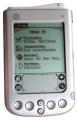
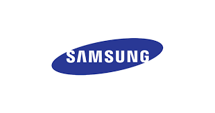

2000: Smartphones
|
A smartphone is a mobile phone with an advanced mobile operating system which combines features of a personal computer operating system with other features useful for mobile or handheld use.
Smartphones have cell phone featues, such as the abilities to place and receive voice calls and text messages, and features of a computer, such as an event calendar, media player, video games, GPS navigation, digital still and video cameras, web browsers, and email. They typically have a color display with a graphical user interface that covers 70% or more of the front surface. The display is often a touchscreen, which enables the user to use a virtual keyboard to type words and numbers and press onscreen icons to activate user programs. Communication occurs over mobile broadband with data choices of either mobile broadband or local Wi-Fi.
The Japanese firm NTT DoCoMo released the first smartphones which accumulated an estimated 40 million subscribers by the end of 2001. In the third quarter of 2012, one billion smartphones were in use worldwide. Worldwide shipments of smartphones topped 1 billion units in 2013.
|
2000: Y2K scare
|
|
With a little preparation, turns out not to be the end of the world after all. It was speculated that computer programs could stop working or produce erroneous results because they stored years with only two digits and that the year 2000 would be represented by 00 and would be interpreted by software as the year 1900. This would cause date comparisons to produce incorrect results. It was also thought that embedded systems, making use of similar date logic, might fail and cause utilities and other crucial infrastructure to fail.
Special committees were set up by governments to monitor remedial work and contingency planning, particularly by crucial infrastructures such as telecommunications, utilities and the like, to ensure that the most critical services had fixed their own problems and were prepared for problems with others. It was only the safe passing of the main "event horizon" itself, January 1, 2000, that fully quelled public fears.
|
2000: Amiga OS 3.9
|
|
The last version of the "Classic" OS, which was tightly integrated into proprietary chips running the Motorola 68000 series of processors. Although development on the Amiga continues, it begins to radically change after this OS release. |
2000: Windows 2000
 |
|
(NT 5.0) Microsoft continues to improve the NT line.Windows 2000 comes in four versions: Professional, Server, Advanced Server, and Datacenter Server. Windows 2000 is classified as a hybrid-kernel operating system, and its architecture is divided into two modes: user mode and kernel mode. The kernel mode provides unrestricted access to system resources and facilitates the user mode, which is heavily restricted and designed for most applications.
All versions of the operating system support the Windows NT filesystem, NTFS 5, the Encrypted File System (EFS), as well as basic and dynamic disk storage. Dynamic disk storage allows different types of volumes to be used. The Windows 2000 Server family has enhanced functionality, including the ability to provide Active Directory services (a hierarchical framework of resources), Distributed File System (a file system that supports sharing of files) and fault-redundant storage volumes.
|
2000 September 14: Windows ME
|
|
Milenium Edition, Microsoft's last OS following the Win95 based kernel. It provided Internet Explorer 5.5, Windows Media Player 7, and the new Movie Maker software, which provided basic video editing and was designed to be easy for home users. Windows Me is an MS-DOS based version just like Windows 95 and Windows 98 but with access to real mode MS-DOS restricted for faster system boot time. This was one of the most publicized changes in Windows Me because applications that needed real mode DOS to run (such as older disk utilities) would not run under the Windows Me operating system.
|
2000: Crusoe
|
|
Transmeta Corporation introduced Crusoe, low power microprocessors designed to create a new category of Mobile Internet Computers. Crusoe performs in software some of the functionality traditionally implemented in hardware, resulting in simpler hardware with fewer transistors. The relative simplicity of the hardware means that Crusoe consumes less power (and therefore generates less heat) than other x86-compatible microprocessors running at the same frequency.
|
2000: J2EE
|
|
Don Ferguson invents the Java 2 Enterprise Edition application server at IBM. J2EE includes several API specifications, such as JDBC, RMI, e-mail, JMS, web services, XML, etc, and defines how to coordinate them. Java EE also features some specifications unique to Java EE for components. This allows the developer to create an enterprise application that is portable between platforms and scalable, while integrating with legacy technologies. J2EE can handle the transactions, security, scalability, concurrency and management of the components that are deployed to it, allowing the developers to concentrate more on the business logic of the components rather than the lower level maintenance tasks.
|
2000: C#
|
|
Anders Hejlsberg is the chief architect of C#, the first component-oriented programming language in the C and C++ family to combine the power of those languages with the functional ease of modern, rapid application development tools. Anders Hejlsberg also played a pivotal role in the development and design of Visual J++ and the Windows Foundation Classes. In 2003, J++ support was dropped in favor of J#, which has been included into the MS .NET platform.
|
2000: 1 Ghz Athlon
|
|
AMD released the first 1GHz microprocessor a month before Intel. Athlon is the brand name applied to a series of different x86 processors designed and manufactured by AMD. The original Athlon, or Athlon Classic, was the first seventh-generation x86 processor and, in a first, retained the initial performance lead it had over Intel's competing processors for a significant period of time. AMD has continued the Athlon name with the Athlon 64, an eighth-generation processor featuring AMD64 technology.
|
2000: Intel Pentium4 1Ghz, 1.4, and 1.5 GHz
|
|
The Pentium 4 is a seventh-generation x86 architecture microprocessor produced by Intel and is their first all-new CPU design, called the NetBurst architecture, since the Pentium Pro of 1995. Unlike the Pentium II, Pentium III, and various Celerons, the architecture owed little to the Pentium Pro/P6 design, and was new from the ground up. The microarchitecture of Netburst featured a very deep instruction pipeline, with the intention of scaling to very high frequencies. It also introduced the SSE2 instruction set for faster SIMD integer, and 64-bit floating-point computation.
|
2000: Mac OS X
|
|
|
Steve Jobs is back with Apple and together they release a new phase for Macintosh, this time based on FreeBSD UNIX, OS X delivers the NeXT dream. Mac OS X (officially pronounced "Mac OS Ten") is a line of proprietary, graphical operating systems developed, sold, and marketed by Apple Computer, the latest of which is included with all currently shipping Apple Macintosh computers. Mac OS X is the successor to the original Mac OS, which had been Apple's primary operating system since 1984.
Unlike its predecessor, Mac OS X is a multi-user, pre-emptively multitasking, Unix-like operating system built on technology that had been developed at NeXT through the second half of the 1980's and up until Apple Computer purchased the company in early 1997. Mac OS X is based on the Mach kernel and the BSD implementation of Unix, which were incorporated into NEXTSTEP, the object-oriented operating system developed by Steve Jobs' NeXT company after he left Apple in 1985.
|
2000: Andrew Chi-Chih Yao
|
|
ACM Turing Award Winner in recognition of his fundamental contributions to the theory of computation, including the complexity-based theory of pseudorandom number generation, cryptography, and communication complexity. |
2000: PlayStation2
|
|
Sony releases the PlayStation2, a 64-bit, CD ROM based video game console. The PS2 is part of the sixth generation era, and has become the fastest selling gaming console in history, with over 100 million units shipped by November 2005, beating the previous record holder, the PlayStation, by three years and nine months. When it was released, the PS2 had many advanced features that were not present in other contemporary video game consoles, including DVD-playback functionality, USB support, and IEEE 1394 expansion ports.
|
2000: Napster
|
|
Shawn Fanning developes internet file sharing software service that enrages the recording industry. Napster was the first widely-used peer-to-peer (or P2P) music sharing service. |
2000: SD Memory Cards
|
|
A flash memory card is a solid-state electronic flash memory data storage device used with digital cameras, handheld and laptop computers, telephones, music players, video game consoles, and other electronics. They offer high re-recordability, power-free storage, small form factor, and rugged environmental specifications.
At the 2000 CES trade show Matsushita, SanDisk and Toshiba Corporation announced the creation of the SD Card Association to promote SD cards. It is headquartered in California and its executive membership includes some 30 world-leading high-tech companies and major content companies. Early samples of the SD Card were available in the first quarter of 2000, with production quantities of 32 and 64 megabytes available 3 months later.
SD capacity continues to exapand, as of 2016 1TB capacity has been released with no end in sight.
|
2000: USB Flash Drive
|
Floating Gate Transistor
|
USB flash drives are NAND-type flash memory data storage devices integrated with a USB interface. They are typically small, lightweight, removable and rewritable. As of November 2006, memory capacities for USB Flash Drives currently are sold from 32 megabytes up to 64 gigabytes.
USB flash drives offer potential advantages over other portable storage devices, particularly the floppy disk. They are more compact, generally
faster, hold more data, and may be more reliable (due to their lack of moving parts) than floppy disks.
IBM was the first North American seller of a USB flash drive, and marketed an 8 MB version of the product in 2001 under the "Memory Key" moniker. Lexar can also lay claim to a pioneering USB flash drive product. In 2000 they introduced a Compact Flash (CF) card having an internal USB function.
But the technology behind devices like Flash Memory cards and USB Flash Drives come from Flash Memory, which was invented by Dr. Fujio Masuoka while working for Toshiba in 1984. According to Toshiba, the name 'Flash' was suggested by Dr. Masuoka's colleague, Mr. Shoji Ariizumi, because the erasure process of the memory contents reminded him of a flash of a camera.
There are two types of Flash memory, NOR and NAND. NAND is the common form found in devices like memory cards, USB Flash drives, audio players, digital cameras, video games, PDAs and mobile Phones.
In a computer, working memory is placed in RAM, which allows the information to be randomly accessed, but will lose the information without a steady flow of electricity, so changes are saved into long term memory storage, which is usually on a hard drive or CD. Flash memory has the ability to allow random access like RAM, yet is a form of non-volatile storage, meaning it does not require a steady stream of electricity.
Flash memory stores information in an array of floating gate transistors, called "cells", each of which traditionally stores one bit of information.
Newer flash memory devices, sometimes referred to as multi-level cell devices, can store more than 1 bit per cell, by using more than two levels of electrical charge, placed on the floating gate of a cell.
In a Floating Gate Transistor, oxide surrounds the floating gate entirely, so an electrical charge trapped on the floating gate remains there. The charge stored on the floating gate can be modified by applying voltages to the source, drain, and control gate terminals. This is what keeps the memory state when the power is off.
Standard computer RAM is currently much faster than Flash, or any other ROM, but work is in place to create Flash memory that is as fast as RAM. ROM technology like Flash goes back many years, but 2000 is definately the year that USB Flash Drives began popping up all over the place. As of 2016 1TB capacity has been released with no end in sight.
|
2000 July: OpenOffice
|
|
OpenOffice.org is based on StarOffice, an office suite developed by StarDivision and acquired by Sun Microsystems in August 1999. The source code of the suite was released in July 2000 with the aim of reducing the dominant market share of Microsoft Office by providing a free, open and high-quality alternative. OpenOffice.org is free software, available under the GNU Lesser General Public License (LGPL).
The project and software are informally referred to as OpenOffice, but this term is a trademark held by another party, requiring the project to adopt OpenOffice.org as its formal name.
The components available include:
Writer - a word processor.
Calc - a spreadsheet.
Impress - a presentation program.
Base - a database program (not introduced until version 2.0)
Draw - a vector graphics editor
Math - for creating and editing mathematical formulae.
OOoBasic - a programming language that can be used to enhance the above components.
|
2000 Nov: Microsoft Exchange Server 2000
|
|
Exchange 6.0 raised the maximum sizes of databases and increased the number of servers in a cluster from two to four, and integrated with Active Directory in Windows 2000 server to set accounts and access rights.
|
2001: Linux Kernel 2.4 Released
|
|
The Linux kernel is an assortment of modular components and subsystems including device drivers, protocols, and other component types. APIs, programming interfaces that provide a standard method by which the Linux kernel can be expanded, glues these to the core of the Linux kernel.
Linux 2.4 is the first release of the Linux kernel that will include a full-featured resource management subsystem. First, Linux 2.4 can handle many more simultaneous processes. Second, the scheduler has been to be more efficient on systems with a larger number of concurrent processes. Third, kernel 2.4 can now handle an amazing number of users and groups-- about 4.2 billion. (And that's a lot of users!) In addition, support for more powerful hardware is provided which now supports up to 64GB of RAM on Intel hardware, 16 Ethernet cards, 10 IDE controllers, multiple IO-APICs, and other pointless abuses of good hardware. The 2-gigabyte file size restriction has also been lifted, and much more.
|
2001: Intel Itanium IA-64 Architrecture
|
|
The Itanium is an IA-64 microprocessor developed jointly by Hewlett-Packard and Intel. It uses Explicitly Parallel Instruction Computing (EPIC), where the compiler would line up instructions for parallel execution, replacing Reduced Instruction Set Computing (RISC) architecture. Features were added to ensure compatibility with both Intel x86 and HP UNIX applications. It was expected to dominate servers, workstations, and perhaps even desktops, however it expensively failed to do so, giving it the nickname Itanic, in reference to the sinking Titanic ship.
|
2001: Windows XP
|
|
(NT 5.1) Microsoft continues to improve the NT line. It presents a redesigned GUI. New software management capabilities were introduced to avoid the "DLL hell" that plagued older consumer versions of Windows. It is also the first version of Windows to use product activation to combat software piracy, a restriction that did not sit well with some users and privacy advocates. Windows XP has also been criticized by some users for security vulnerabilities, tight integration of applications such as Internet Explorer and Windows Media Player, and for aspects of its user interface.
The two major editions are Windows XP Home Edition, designed for home users, and Windows XP Professional, designed for business and power-users.Windows XP Professional offers a number of features unavailable in the Home Edition, including:
the ability to become part of a Windows Server domain, Remote Desktop server, offline Files and Folders, Encrypting File System, Group Policies, Automatic Software Installation and Maintenance, Roaming User Profiles, Remote Installation Service (RIS), and multiple processors for symmetric multiprocessing, allowing the PC to divide work between multiple processors (CPUs).
|
2001: OpenVMS IA64
|
|
Just prior to its acquisition by HP, Compaq announced the port of OpenVMS to the Intel Itanium 64-bit EPIC architecture. This port was accomplished using the OpenVMS Alpha source code pool and libraries. The OpenVMS Alpha pool was used as the basis of the port as it was significantly more portable than the original OpenVMS VAX source code and because the code was fully 64-bit capable.
|
2001: Wikipedia
|
|
Wikipedia is an international Web-based free-content encyclopedia project. It exists as a wiki, a website that allows visitors to edit its content; the word Wikipedia itself is a portmanteau of the words wiki and encyclopedia. Wikipedia is written collaboratively by volunteers, allowing articles to be changed by anyone with access to the website. Wikipedia's main servers are in Tampa, Florida, with additional servers in Amsterdam and Seoul.
The project began January 2001 as a complement to the expert-written (and now defunct) Nupedia, and is now operated by the non-profit Wikimedia Foundation.
Midway through 2006, Wikipedia had more than 4,600,000 articles in many languages, including more than 1,200,000 in the English-language version. There were more than 200 language editions of Wikipedia, fifteen of which had more than 50,000 articles each. |
2001: BitTorrent
|
|
Created by Bram Cohen, BitTorrent is a Python based file sharing utility that shares files between all clients currently getting the file and continue to share the file on their computer. What makes bittorrent so successful is that it shares the files between all users, which means if the file is popular the bandwidth is likely to increase and will not overload or stop the download because so many users trying to get the file at the same time.
|
2001: X-Box
|
|
The Xbox was the first console to incorporate a hard disk drive, used primarily for storing game saves compressed in zip archives and content downloaded from Xbox Live. An Xbox owner can rip music from standard audio CDs to the hard drive so players can play their custom soundtrack, in addition to the original soundtrack of Xbox games that support such a feature. The Xbox is based on commodity PC hardware and runs a stripped-down version of the Windows 2000 kernel using APIs based largely on DirectX 8.1. It also features built in fast ethernet.
|
2001: Dahl & Nygaard
|
|
ACM Turing Award Winners for ideas fundamental to the emergence of object oriented programming, through their design of the programming languages Simula I and Simula 67. |
2001: Dual Core Processor
|
|
IBM released the POWER4, the first multicore chip, which contains two PowerPC cores in a single die. It also was the first to implement a Multi-Chip-Module(MCM) containing four POWER4 Microprocessors in a single package.
It is besed on the 64-bit PowerPC instruction set architecture, replacing the previous POWER3 chip design.
POWER is a reduced instruction set computer (RISC) instruction set architecture designed by IBM. The name is a backronym for Performance Optimization With Enhanced RISC. The POWER architecture was used to develop the PowerPC architecture, used in later Apple Macintosh computers, some IBM workstations, as well as a number of embedded applications.
|
2001: PocketPC
|
|
A Pocket PC is a handheld-sized computer that runs the Windows CE operating system. It has many of the capabilities of modern desktop PCs. Currently there are thousands of applications for Pocket PC, many of which are freeware. Pocket PCs can also be used with many add-ons like GPS receivers, barcode readers, RFID readers, and cameras.
|
2001: Windows XP 64-bit
|
|
Microsoft Windows XP 64-bit Edition was a version of Microsoft's Windows XP operating system designed to run on Intel Itanium family of microprocessors in their native 64-bit mode. Microsoft later released Windows XP Professional x64 Edition, which is designed for x86 processors supporting the x64 extensions.
|
2001: Apple iPod
|
|
The iPod is a brand of portable media players by Apple Computer. The full-sized model stores media on a built-in hard drive, while the smaller iPod shuffle and iPod nano use flash memory. Like many digital audio players, iPods can serve as external data storage devices when connected to a computer. Originally offered with 5GB of storage, newer models boast 60GB of storage, color screens, and video players.
|
2001: AOL and Time Warner merge
|
|
In 2001, a new company called AOL Time Warner was created when AOL purchased Time Warner. AOL CEO Steve Case became executive chairman of the new company, while Time Warner CEO Gerald Levin retained the CEO title. The deal has since become a symbol of the Dot com bubble and is widely regarded as a disaster, with a $2.4 billion shareholder settlement and a $5 billion price boosting share buyback program. The value of the America Online division dropped significantly. This forced a goodwill write down, causing AOL Time Warner to report a loss of $99 billion in 2002 - at the time, the largest loss ever reported by a company. In response to the huge loss in 2002, the company dropped the "AOL" from its name, and removed Steve Case as executive chairman in favour of Richard Parsons. Case resigned from the Time Warner board on October 31, 2005.
|
2001: Napster Shutdown
|
|
The RIAA uses the US Digital Millenium Copyright Act to shut down Napster. After a $2.4 million takeover offer by the Private Media Group, Napster's brand and logos were acquired at bankruptcy auction by the company Roxio, Inc. which used them to rebrand the pressplay music service as Napster 2.0. As of 2005, this new service has met with moderate success.
|
2001: Nintendo Game Boy Advance
|
|
The Game Boy Advance is much smaller and lighter than the origial Game Boy at 3.2" Height by 5.69 " Wide and 0.97" Deep. It features a 2.9" Reflective thin-film transistor color LCD of up to 240 x 160 pixels capable of displaying 511 simultaneous colors in character mode and 32,768 simultaneous colors in bitmap mode. Weighing only 5 ounces, it is powered by two AA batteries that last around 15 hours. The CPU is a 16.8 MHz 32-bit ARM7TDMI with 96kb embedded memory and 256 kb WRAM. Backward compatibility for Game Boy and Gameboy Color games is provided by a 8.4 MHz Z80 co-processor, while a link port at the top of the unit allows it to be connected to other devices via use of a Nintendo Game Link cable or GameCube cable.
|
2001: Data Domain
Data Domain was an Information Technology company from 2001 to 2009 specializing in target-based deduplication solutions for disk based backup. Since its acquisition by EMC Corporation in 2009, Data Domain systems have been EMC's flagship protection storage platform for backup, archive, and disaster recovery.
Data Domain was founded by Kai Li, Ben Zhu, and Brian Biles. Chief Architect Hugo Patterson joined 3 months after initial funding. The goal of the company was to minimize the tape automation market with a disk-based substitute. It did this by inventing a very fast implementation of lossless data compression, optimized for streaming workloads, which compares incoming large data segments against all others stored in its multi-TB store. Originally categorized as "capacity optimization" by industry analysts, it later became more widely known as inline "data deduplication".
In June 2009, EMC acquired Data Domain for $2.4 billion. According to IDC, EMC in 2014 captured 62.3% share of the market for purpose-built backup devices worldwide. The majority of this share was from Data Domain product revenue.
2002: AMD-8000 "Hammer"
|
|
The Hammer processor architecture is designed to provide unparalleled PC performance on 32-bit applications while allowing a migration path to 64-bit applications. The “Hammer” family of microprocessors features a high-performance integrated memory controller and a high-speed scalable system bus using HyperTransport technology. |
2002 July 8: Intel Itanium2
|
|
Intel &HP release an improved IA-64 Itanium processor. Although faster, Itanium had yet to produce the types of speed that would allow it to domainate the market. The following companies announced a new "Itanium Alliance" in September 2005 to promote hardware and software development for the chip: Hewlett-Packard, Hitachi, Fujitsu, NEC, Unisys, Bull, Silicon Graphics, Microsoft, Oracle, Red Hat, Novell, BEA Systems, SAP, SAS, and Intel. |
2002: Ronald L. Rivest, Adi Shamir, and Leonard M. Adleman
|
|
ACM Turing Award Winners for seminal contributions to the Theory and Practical Applications of Public Key Crytography. |
2002: .NET Framework
|
|
Microsoft releases .NET web services development platform.Programs written for the .NET framework execute in a software environment that manages the program's runtime requirements. This runtime environment, which is also a part of the .NET framework, is known as the Common Language Runtime (CLR). The CLR provides the appearance of an application virtual machine, so that programmers need not consider the capabilities of the specific CPU that will execute the program. The CLR also provides other important services such as security guarantees, memory management, and exception handling.
The class library and the CLR together comprise the .NET framework. The framework is intended to make it easier to develop computer applications and to reduce the vulnerability of applications and computers to security threats. First released in 2002, it is included with current versions of Microsoft Windows, and can be installed on most older versions.
|
2002: Visual Studio .NET
|
|
Microsoft released Visual Studio .NET in 2002 (the beta version was released on the Microsoft developer network in 2001). The biggest change was the introduction of a managed code development environment using the .NET Framework. Programs developed using .NET are not compiled to machine language (like C++ is, for example) but instead to a format called MSIL or CIL. When an MSIL application is executed, it is compiled while being executed into the appropriate machine language for the platform it is being executed on, thereby making code portable across multiple platforms. Programs compiled into MSIL can be executed only on platforms which have an implementation of Common Language Infrastructure. It is possible to run MSIL programs in Linux or Mac OS X using non-Microsoft .NET implementations like Mono and DotGNU.
Microsoft introduced C#, a new programming language, that targets .NET. It also introduced the successor to Visual J++ called Visual J#. Visual J# programs use Java's language syntax. However, unlike Visual J++ programs, Visual J# programs can only target the .NET Framework, not the Java Virtual Machine that all other Java tools target.
Visual Basic was drastically changed to fit the new framework, and the new version was called Visual Basic .NET. Microsoft also added extensions to C++, called Managed Extensions for C++, so that C++ programmers could create .NET programs.
Visual Studio .NET can be used to make applications targeting Windows (using Windows Forms, part of the .NET Framework), Web (using ASP.NET and Web Services) and, with an add-in, portable devices (using the .NET Compact Framework).
|
2002: HP & Compaq merge
|
|
In 2001, Compaq engaged in a merger with Hewlett-Packard. Numerous large HP shareholders, including Walter Hewlett, publicly opposed the deal, which resulted in a nasty proxy battle between those for and against the deal. The merger was approved only after the narrowest of margins, and allegations of vote buying (primarily involving an alleged last-second back-room deal with Bank of America) haunted the new company. Some Compaq products were re-branded with the HP nameplate, while the Compaq brand remained on other products, notably PC, PDA, and server lines.
|
2002: 10 Gigabit Ethernet
|
|
Specified by IEEE as 802.3-2005 standard, it was released as 10GbE over fiber only. A twisted pair implementation is expected sometime in 2006. |
2002: WiFi Hotspots
|
|
Public Wireless services begin to appear at various stores in the US. Most are commercial, however, many hotspots are open and free for use, either set up by the public or by a commercial enterprise hoping to use it to attract customers.
A "poisoned hotspot" refers to a free public hotspot set up by identity thieves or other malicious individuals for the purpose of "sniffing" the information being sent by the user.
|
2002: iRobot Roomba
|
Roomba is a series of autonomous robotic vacuum cleaners sold by iRobot, introduced in September 2002. As of Feb 2014, over 10 million units have been sold worldwide. Roomba features a set of basic sensors that enable it to perform its tasks. For instance, the Roomba is able to change direction upon encountering obstacles, to detect dirty spots on the floor, and to sense steep drops to keep it from falling down stairs. It uses two independently operating wheels that allow 360° turns in place. Additionally, it can adapt to perform other more creative tasks using an embedded computer in conjunction with the Roomba Open Interface.
iRobot Corporation is an American advanced technology company founded in 1990 by three MIT graduates who designed war robots. Incorporated in Delaware, the company builds robots such as military and police robots, such as the PackBot along with a range of autonomous home vacuum cleaners (Roomba), floor moppers (Braava), and other autonomous cleaning solutions.
|
2002: Treo
|
|
Handspring ships the Treo, the first PDA + Cell phone including wireless internet services such as email and the Web. |
2002: Palm i705
|  |
Palm releases the first PDA with wireless internet service. |
2002: Tablet PC
|
Tablet based laptops are released, along with Windows XP Tablet edition. Features a swivel touch screen with pen and speech interactive options.
|
2002: XP Media Center Edition
|
An edition of Microsoft XP that features PC based TV recording, which turns a PC into a Personal Video Recorder (PVR). |
2002: Nintendo Game Cube
|
|
The Nintendo GameCube uses a proprietary storage medium, the Nintendo GameCube Game Disc, based on Matsushita's optical-disc technology; the discs are approximately 3 1/8 inches in diameter (considerably smaller than the 12 cm CDs or DVDs used in competitors' consoles), and have a capacity of approximately 1.5 gigabytes. Contrary to popular belief, GameCube discs are not physically read any differently from a standard DVD disc, but are encrypted with a key derived from the Burst Cutting Area, a 'bar code' unreadable by most DVD drives. This move was intended to prevent unauthorized copying of GCN titles, but was eventually cracked. By exploiting a flaw in Phantasy Star Online Episode I & II, users were able to connect their GameCubes to their PCs and run homebrew programming on the console.
|
2002: Linked In
|
LinkedIn is a business and employment-oriented social networking service that operates via websites. Founded on December 14, 2002, and launched on May 5, 2003, it is mainly used for professional networking, including employers posting jobs and job seekers posting their CVs (curriculum vitae = buzzword for resume).
As of September 2016, LinkedIn has more than 467 million accounts, out of which more than 106 million are active. LinkedIn allows users (workers and employers) to create profiles and "connections" to each other in an online social network which may represent real-world professional relationships. Users can invite anyone (whether a site user or not) to become a connection. The site has an Alexa Internet ranking as the 14th most popular website (October 2016).
|
2002: SpaceX
|
Space Exploration Technologies Corporation, better known as SpaceX, is an American aerospace manufacturer and space transport services company headquartered in Hawthorne, California, United States. It was founded in 2002 by Tesla Motors CEO and former PayPal entrepreneur Elon Musk with the goal of creating the technologies to reduce space transportation costs and enable the colonization of Mars.
It has developed the Falcon 1 and Falcon 9 launch vehicles, both designed to be reusable, and the Dragon spacecraft which is flown into orbit by the Falcon 9 launch vehicle to supply the International Space Station (ISS) with cargo. A manned version of Dragon is in development. SpaceX is funded by government subsidies and contracts with multiple entities.
SpaceX's achievements include the first privately funded, liquid-propellant rocket (Falcon 1) to reach orbit, in 2008; the first privately funded company to successfully launch, orbit and recover a spacecraft (Dragon), in 2010; and the first private company to send a spacecraft (Dragon) to the ISS, in 2012. The launch of SES-8, in 2013, was the first SpaceX delivery into geosynchronous orbit, while the launch of the Deep Space Climate Observatory (DSCOVR), in 2015, was the company's first delivery beyond Earth orbit.
|
2003: SATA
|
|
Serial ATA is a computer bus technology primarily designed for transfer of data to and from a hard disk. It is the successor to Advanced Technology Attachment standard (ATA). This older technology was retroactively renamed Parallel ATA (PATA) to distinguish it from Serial ATA. Both SATA and PATA drives are IDE (Integrated Drive Electronics) drives, although IDE is often misused to indicate PATA drives.
SATA drives are hot plugable and use smaller power and interfact cables. Unlike PATA, SATA drives cannot share the bus, so each device has a dedicated cable and bandwidth.
SATA drives may be plugged into Serial Attached SCSI (SAS) controllers and communicate on the same physical cable as native SAS disks. SAS disks, however, may not be plugged into a SATA controller.
First-generation SATA interfaces, also known as SATA/150 or SATA 1, run at 1.5 gigabits per second (Gbit/s), but uses encoding at the physical layer, resulting in an actual data transfer rate of 1.2 Gbit/s, or 150 megabytes per second (MB/s). The relative simplicity of a serial link
and the use of LVDS allow both the use of longer drive cables and an easier transition path to higher speeds.
Second generation SATA is known as SATA 3.0 Gbit/s, and runs at 2.4 Gbit/s or 300MB/s. The new controllers maintain backwards compatiblity with original SATA devices.
External SATA is commonly called eSATA. Currently, most PC motherboards do not have an eSATA connector. eSATA may be enabled through
the addition of an eSATA host bus adapter (HBA) or bracket connector for desktop systems or with a Cardbus or ExpressCard for notebooks.
|
2003 February: iSCSI
|
|
IETF ratifies the iSCSI standard over TCP/IP networks. Along with gigabit Ethernet, iSCSI becomes the new common way to build Storage Area Networks. |
2003: Motorola A760
|
The world's first handset combining a cell phone, Linux operating system, and Java technology with full PDA functionality. |
2003: Cisco aquires Linksys
|
|
One notable result of Cisco buying Linksys was the WRT54G router. To minimize costs, Linksys decided to base the firmware on Linux. In 2003, Columbia Law School Professor Eben Moglen pointed out that due to the Linux-based nature of the firmware, Cisco was legally obliged to release the source code to the routers, under the terms of the Linux GNU General Public License. Cisco acknowledged its obligation, released the code, and revealed the secrets of how the software code interfaced to the hardware.
This subsequently spawned an open source community, dedicated to modding Linksys router firmware. Amateur programmers quickly learned how to add $600 features to $60 routers. This changed the dynamics of the router market as expectations of both stability and features on the part of consumers increased. Linksys and other vendors then had to respond, since open source firmware is now freely available for licensing and customization, which would enable new router vendors to enter the market without the traditional barrier of having to develop the firmware code. The best consumer routers are now arguably comparable to what were formerly high-end routers.
|
2003: iTunes Store
|
|
Debuting on April 28, 2003, the iTunes Music Store was the first online music store to gain widespread media attention. Apple's store allows the user to purchase songs and transfer them easily to the iPod through iTunes. The iPod remains one of the few digital music players (besides some Motorola cell phones) that are intended to work with the iTunes Music Store, although some other digital music players will work with iTunes.
It offers over 43 million songs, 700,000 apps, 190,000 TV episodes and 45,000 films as of September 12, 2012. The iTunes Store's revenues in the first quarter of 2011 totalled nearly US $1.4 billion; by May 28, 2014, the store had sold 35 billion songs worldwide.
|
2003: Athlon 64
 |
AMD releases the first 64 bit processor that runs both 64bit and 32bit software environments. The AMD64 architecture has been adopted (under the name EM64T or IA-32e) by Intel. Due to the difference in names used by Intel and AMD, Microsoft's marketing instead uses the term x64. |
2003: IBM 64bit for Mac G5
|
|
IBM releases it's PowerPC 970 64bit Processor as Apple releases an update to OS X that adds partial 64bit support for the new IBM chips. |
2003: Hyperthreading
|
|
Intel releases the Pentium4 with Hyperthreading, which allows a single processor to double the amount of work it can do by breaking requests into separate threads, and processing two threads per clock cycle. |
2003: SCO threatens Linux
|
|
SCO Group attempts to sue IBM over a claim that IBM took some of their proprietary code and put it into Linux. |
2003 March: Pentium M
|
Introduced in March 2003, the Pentium M is an x86 (i686) architecture microprocessor designed and manufactured by Intel and forms part of the Intel Centrino platform. The processor was originally designed for use in laptop personal computers, thus the "M" for mobile. |
2003 April 24: Windows Server 2003
|
|
(NT 5.2) Microsoft continues to improve the NT line. Unlike Windows 2000 Server, Windows Server 2003's default installation has none of the server components enabled, to reduce the attack surface of new machines. Windows Server 2003 brought in enhanced Active Directory compatibility, and better deployment support, to ease the transition from Windows NT 4.0 to Windows Server 2003 and Windows XP Professional.
Significant enhancements have been made to various services such as the IIS web server (which was almost completely re-written to improve performance and security), Distributed File System (which now supports hosting multiple DFS roots on a single server), Terminal Server, Active Directory, Print Server, and a number of other areas. Windows Server 2003 was also the first operating system released by Microsoft after the announcement of their Trustworthy Computing initiative, and as a result, contains a number of improvements to security defaults and practices.
|
2003: Alan Kay
|
|
ACM Turing Award Winner for pioneering many of the ideas at the root of contemporary object-oriented programming languages, leading the team that developed Smalltalk, and for fundamental contributions to personal computing. |
2003 April: OSX 10.3
|
|
Macintosh 10.3 (Panther) is released. Featuring improved "Expose" window manager, mail client, file finder, and DVD player. New FileVault data security. |
2003: Amiga OS 4
|
|
AmigaOS 4.0 moves the Amiga Operating System to the modern Power PC chips enabling the easy use of off-the-shelf components from third party vendors. True to its heritage, AmigaOS 4.0 remains small, fast and robust. |
2003: 64bit ready Linux kernel 2.6
|
Features Hyperthreading, improved embedded system support, and NUMA (Non-Uniform Memory Access) a major leap forward for efficiency on systems that have many processors. 2.6 increased the maximum number of users and groups from 65,000 to over 4 billion, increased the maximum number of process ids from 32,000 to 1 billion, increased the maximum number of device types (major device) from 255 to 4095 and the maximum number of devices of each type (minor device) from 255 to more than a million.
The 2.6 kernel improved 64-bit support and filesystems of up to 16 terabytes on common hardware, and improvements to the "overall responsiveness" for interactive processes (the kernel became fully pre-emptible and the I/O scheduler was rewritten). Support for futexes, a rewrite of threading infrastructure to allow the Native POSIX Thread Library (NPTL) to be used, support for SGI's XFS filesystem, iSCSI, infiniband, inotify, 9P, and FUSE support, among others.
|
2003: Intel Centrino
|
Designed for portable systems, a low powered high speed processor. |
2003: Intel PXA800F
|
An integrated Cellular and PDA processor. |
2003: Nintendo Game Boy Advance SP
|
|
In early 2003, Nintendo upgraded the Game Boy Advance giving it an internal front-light that can be turned on or off, a rechargeable lithium ion battery, as well as a folding case approximately half the size of the Game Boy Advance. It was designed to address some common complaints with the original Game Boy Advance which was criticized for being very uncomfortable. They also released a new backlit switch that controls the light now toggles between "normal" (which itself is already brighter than the original Game Boy Advance SP's screen), and "bright," an intense brightness level similar to LCD television set.
|
2003: Nokia N-Gage
|
|
Nokia released the N-Gage in 2003. It was designed as a combination mp3 player, cellphone, PDA, radio, and gaming device. The system received a lot of criticism alleging defects in its physical design and layout, including its vertically oriented screen and requirement of removing the battery to change game cartridges. The most well known of these was "sidetalking", or the act of placing the phone speaker and receiver on an edge of the device instead of one of the flat sides, causing the user to appear as if they are speaking into a taco. The N-Gage QD was later released to address the design flaws of the original. However, this practical redesign came at a cost: certain features available in the original N-Gage, including MP3 playback, FM radio reception, and USB connectivity were removed.
|
2003: Microsoft Exchange Server 2003
|
|
Exchange 6.5 features enhanced disaster recovery which allows the server to send and receive mail while the message stores are being recovered from backup. Outlook Mobile Access and server-side ActiveSync were included, dropping the Mobile Information server. Better anti-virus and anti-spam protection have also been added, both by providing built-in APIs that facilitate filtering software and built-in support for the basic methods of originating IP address, SPF ("Sender ID"), and DNSBL filtering.
Exchange accounts can also be accessed through a web browser, known as Outlook Web Access (OWA). Exchange 2003 also features a WAP version of OWA, called Outlook Mobile Access (OMA). Coupled with Windows Mobile 5.0 and SP2, Exchange
Server 2003 supports "pushing" email to Windows mobile devices - similar to the operation of BlackBerry devices.
|
2003: HDMI
|
High-Definition Multimedia Interface is a compact audio/video interface for transmitting uncompressed digital data. It represents a digital alternative to consumer analog standards, such as radio frequency (RF) coaxial cable, composite video, S-Video, SCART, component video, D-Terminal, and VGA. HDMI connects digital audio/video sources—such as set-top boxes, Blu-ray Disc players, personal computers (PCs), video game consoles (such as the PlayStation 3 and Xbox 360), and AV receivers—to compatible digital audio devices, computer monitors, and digital televisions.
HDMI supports, on a single cable, any TV or PC video format, including standard, enhanced, and high-definition video; up to 8 channels of digital audio; and a Consumer Electronics Control (CEC) connection. The CEC allows HDMI devices to control each other when necessary and allows the user to operate multiple devices with one remote control handset. Because HDMI is electrically compatible with the signals used by Digital Visual Interface (DVI), no signal conversion is necessary, nor is there a loss of video quality when a DVI-to-HDMI adapter is used. As an uncompressed connection, HDMI is independent of the various digital television standards used by individual devices, such as ATSC and DVB, as these are encapsulations of compressed MPEG video streams (which can be decoded and output as an uncompressed video stream on HDMI). HDMI products started shipping in the autumn of 2003.
There are four HDMI connector types. Type A and Type B are defined in the HDMI 1.0 specification, Type C is defined in the HDMI 1.3 specification, and Type D is defined in the HDMI 1.4 specification.
|
2004: Mozilla Firefox 1.0
|
|
The popular standards based web browser finally reached version 1.0 November 2004 by the Mozilla Foundation. Firefox becomes one of the most widely used free and open sourced applications in the universe...well okay, in the world. |
2004: OpenVMS IA64 V8.0
|
|
HP's 1st production quality Itanium based OS. |
2004: Intel 925X
|
|
Intel releases the 925X Express Chipset that integrates high graphics and sound core logic. Core logic connects the CPU and memory to mass storage, fast graphics, networking, audio, and other I/O. |
2004: Intel 2915ABG
|
|
Integrated wireless 802.11 A,B & G protocols in the Centrino processor.
|
2004: IBM sells PC biz to Lenovo
 |
IBM, original creator of the PC format, sells it's PC business to Lenovo.
|
2004: Comdex bust
|
Once a huge tech conference, now forced to close out due to lack of attendance following the .com economic bubble bust. |
2004: Google goes public
|
Google began as a research project in 1996 by Larry Page and Sergey Brin, two Ph.D. students at Stanford. They hypothesized that a search engine that analyzed the relationships between websites would produce better results than existing techniques (which ranked results according to how many times the search term appeared on a page). In 2000 Google began selling advertisements associated with the search keyword to produce enhanced search results for the user. While the company does not provide detailed information about its hardware, a 2006 estimate consisted of over 450,000 servers, racked up in clusters located in data centers around the world. According to the Nielsen cabinet, Google is the first search engine on the web with a 54% market share, ahead of Yahoo! (23%) and MSN (13%). Google registers about a billion requests per day.
|
2004: Facebook
|
Facebook is a global social networking website that is operated and privately owned by Facebook, Inc. A January 2009 Compete.com study has ranked Facebook as the most used social network by worldwide monthly active users, followed by MySpace. As of the second quarter of 2016, Facebook had 1.71 billion monthly active users.
|
2004: Oracle aquires Peoplesoft
|
PeopleSoft, Inc. was a company that provided management software to Enterprise networks. The whole software suite of PeopleSoft moved from the traditional client-server based design to web-centric design. The end result was that all of a company's business functions could be accessed and run on a web client on any database.
In 2003, PeopleSoft performed a friendly merger with smaller rival J.D. Edwards software who provided similar services to small and mid sized businesses. J.D. Edwards product architecture is also designed to shield applications from both the operating system and database of the backend servers.
Oracle made a hostile corporate takeover attempt. The U.S. Department of Justice filed suit to block Oracle, on the grounds that the acquisition would break anti-trust laws; however, in September 2004, the suit was rejected by a U.S. Federal judge, who found that the Justice Department had not proven its anti-trust case; in October, the same decision was handed down by the European Commission. Oracle will change the old products into their new product "Fusion", saying that fusion will take the best aspects of the PeopleSoft, JD Edwards and Oracle Applications and merge them into a new product suite.
|
2004: PCIe
|
PCI Express, or PCIe, (formerly known as Arapaho or 3GIO for 3rd Generation I/O, not to be mistaken for PCI-X or PXI) is an implementation of the PCI computer bus that uses existing PCI programming concepts, but bases it on a completely different and much faster serial physical-layer communications protocol. The higher speeds on PCI Express allow it to replace almost all existing internal buses, including AGP and PCI, and Intel envisions a single PCI Express controller talking to all external devices, as opposed to the northbridge/southbridge solution in current machines.
|
2004: NVidia SLI
|
Scalable Link Interface is a method of linking two or more video cards together to increase performace. Based on the 1998 3dfx Scan Line Interleave, SLI has been re-written for the new PCI Express (PCIe) bus.
|
2004: Nintendo DS
|
The Nintendo DS is a Dual Screen handheld game console that features a clamshell design, the bottom screen is touch-sensitive. It features stereo speakers providing virtual surround sound, a built-in microphone, two ARM processors, an ARM946E-S main CPU and ARM7TDMI co-processor at clock speeds of 67 MHz and 33 MHz respectively, with 4 MB of main memory which requires 1.65 volts. The unit has built-in Wi-Fi functionality, which allows communications with a standard access point to access the Internet, and with other DS units through a modified WiFi protocol created by Nintendo and partially secured using RSA security signing.
|
2004: Sony PSP
|
The PlayStation Portable offers the ability to play video games, watch videos, listen to music, view images, as well as Internet browsing functionality. It supports a number of media formats including AAC, MP3, WMA, MPEG-4 and AVC video. With reasonable video and audio bit-rate settings (a resolution of 320×240, a video bit rate of 500 Kb per second, and an audio sampling rate of 22050 kHz) a 22 minute video file is roughly 55 MB, enough to fit on a Memory Stick Duo as small as a 64 MB. At the same rate, a hundred-minute feature film can fit on a 256 MB Memory Stick.
The PlayStation Portable can connect to a wireless network through Wi-Fi IEEE 802.11b which allows it to surf the web via the built-in Access Co. NetFront browser and connect to other PlayStation Portable units for multiplayer gaming world-wide. The Playstation Portable holds the unique distinction of being the first game console to launch with games supporting online gameplay. Ad-hoc wireless networking allows for up to 16 PlayStation Portables within range to communicate directly to each other (typically for multiplayer gaming). One unit acts as the host for a game, which is available to other PlayStation Portable units within that system's range, and appears in a list when the client PlayStation Portable searches for available hosts. One can also use an Ad-Hoc network to send images from one PlayStation Portable to another by use of the "send" and "receive" functions that appear in the "PHOTO" menu.
The PlayStation Portable's main microprocessor is a multifunction device that includes a MIPS R4000-based CPU, hardware for multimedia decoding, as well as a vector unit dubbed "Virtual Mobile Engine". The system has 32 MiB main RAM and 4 MiB embedded DRAM.
|
2005: Windows Mobile 5
|
|
This version designed to use the .NET apps, runs on WindowsCE, and smart phones.
|
2005: Sprint and Nextel merge
|
|
This merger puts the new company at the third largest wireless telecommunications network in the U.S. The tally now reads:
#1 Cingular @ 55.8 million subscribers
#2 Verizon @ 51.3 million subscribers
#3 SprintNextel @ 48.3 million subscribers
The Sprint Power Vision EV-DO network is the largest wireless broadband network in the U.S. They are also a provider of landline, long distance, and is a Tier 1 Internet service provider under the name SprintLink. The new company was created from the $35 billion purchase of NEXTEL Communications by Sprint.
|
2005: Ajax
|
The first use of the term in public was by Jesse James Garrett in his February 2005 article Ajax: A New Approach to Web Applications. Although the term "Ajax" was coined in 2005, most histories of the technologies that enable Ajax start a decade earlier with Microsoft's initiatives in developing Remote Scripting. Techniques for the asynchronous loading of content on an existing web page without requiring a full reload date back to Internet Explorer 3 in 1996. Macromedia's Flash 4 could also, from version 4, load XML and CSV files from a remote server without requiring a browser refresh. Microsoft then created the XMLHttpRequest object in Internet Explorer version 5 and first took advantage of these techniques using XmlHttpRequest in Outlook Web Access supplied with the Microsoft Exchange Server 2000 release. In 2002, a user-community modification to Microsoft Remote Scripting was made to replace the Java applet with XMLHttpRequest, which is currently at the heart of the Ajax technique. |
2005: Symantec purchases Veritas
|
|
Symantec expands its security market by purchasing data backup software company Veritas. With VERITAS valued at $13.5 billion, it was the largest software industry merger to date.
|
2005 March: Intel EM64T Architecture
|
Extended Memory 64-bit Technology (EM64T) is Intel's implementation of AMD64, a 64-bit extension to the IA-32 architecture, in direct competition with their own failing IA-64 architecture. Intel announced that their first dual-core EM64T processors will ship in the second quarter 2005 with the release of the Pentium Extreme Edition 840 and the new Pentium D chips. Analysts have speculated that the clock rate race between Intel and AMD is largely over, with no more exponential gains in clock rate looking likely. Instead, as long as Moore's Law holds up, it is expected that the increasing numbers of transistors that chip-makers can incorporate into their CPUs will be used to increase CPU throughput in other ways, such as by adding cores, as the Pentium D does.
|
2005: Pentium D - The last Pentium
|
With the announcement of the Intel Core brand for their future processors, the Pentium D is the final processor to carry the Pentium brand name that has been at the forefront of Intel's products since 1993, and the first in a line of EM64T architecture based chips.
|
2005: Pentium Exteme Edition
|
Not to be confused with the "Pentium 4 Extreme Edition", this processor is based on the dual core Pentium D, EM64T architecture, but it has Hyperthreading enabled, thus any operating system will see 4 logical processors (2 physical x 2 virtual cores). The only chipsets that will work with the Extreme Edition are Intel's 955X and NVIDIA's nForce4 SLI Intel Edition. Attempting to use an Extreme Edition with an Intel 945-series chipset will disable Hyperthreading, effectively turning the processor into a Pentium D.
|
2005 April: OS X v10.4
|
|
Apple Computer releases Mac OS X v10.4 (Tiger) for the Apple Macintosh.
|
2005: 64bit XP
|
Microsoft publicly released Windows XP Professional x64 Edition for AMD64 and EM64T processors.
|
2005: 64bit Athon Dual Core
|
AMD starts shipping their first dual-core 64-bit desktop processor, the Athlon 64 X2.
|
July 2005: MicroSD
|
The SDA approved the final microSD specification on July 13, 2005. At launch, the microSD format was available in capacities of 32, 64, and 128 MB. SanDisk introduced a 2 GB microSD card in July of 2006, initially priced at 99 USD. Since then, prices for flash memory devices have fallen dramatically. The same 2 GB card as of April 2009 can be found for as little as 12 USD at department stores, and as of May 2009 for as little as 6 USD at online electronics stores. By the end of 2009 16GB versions are on the market for under 50USD.
|
2005: Nintendo Game Boy Micro
|
In September 2005, Nintendo released a second redesign of the Game Boy Advance. This model, dubbed the Game Boy Micro, is similar in style to the original Game Boy Advance's horizontal orientation but is much smaller and sleeker. The Game Boy Micro also offers the user to switch between several colored faceplates to allow customization, a feature which Nintendo advertised heavily around the Game Boy Micro's launch. Unlike the previous Game Boy Advance models, Game Boy Micro does not support Game Boy or Game Boy Color titles.
|
2005 November: Xbox 360
|
Microsoft debuts the Xbox 360, their second-generation console featuring a triple core, 3.2GHz G5 processor, 10MB RAM, 512MB GDDR3 ATi Video, 20GB Removeable Hard Drive, 100BASE-TX Ethernet, 802.11 a/b/g Wi-Fi, wireless controllers, 5.1 surround-sound, 3 USB ports, CD/DVD drive, integrated online gaming, and software features that let you record or pause live TV, rip CDs into MP3 or WMA, digital camera downloads, multimedia presentation software, and media streaming with Windows Media Center PCs.
|
2005 Ruby on Rails
|
Ruby on Rails 1.0 was released December 2005, and had already gained a large number of developer and technology media interest. Ruby is an open sourced scipting language, and Rails is a web development framework application.
|
2005: Apple iPod Nano
|
Digital Audio Player ($149 to $249) You get up to 4GB of capacity in a tiny device that nevertheless has room for a crisp color display. The iPod nano is Apple's fourth digital audio player combining features of both the iPod shuffle and iPod. It was introduced on September 7, 2005. Advertising emphasizes the iPod nano's small size: it is 1.6 inches (40 mm) wide, 3.5 inches (90 mm) long, 0.27 inches (6.9 mm) thick and weighs 1.5 ounces (42 grams). Its stated battery life is 14 hours. The screen is 176 x 132 pixels, 1.5 inches (38 mm) diagonal, and can display 65,536 colors (16-bit color).[3]
The iPod nano uses flash memory instead of a hard disk. As a result, it has no significant moving parts (excluding the click wheel), making it immune to skipping and far more durable than disk-based players. The tradeoff is flash memory has a finite number of read/write cycles, and is more expensive.
|
2005: Google Earth
|
Google Earth is a free-of-charge, downloadable virtual globe program. It maps the earth by the superimposition of images obtained from satellite imagery, aerial photography and GIS over a 3D globe. Google Earth was developed by Keyhole, Inc., a company acquired by Google in 2004. The product was renamed Google Earth in 2005. A feature implemented by Google after its acquisition of Keyhole is a 3D dataset for over 38 US cities.
|
2005: Git
|
Git is a version control system that is used for software development and other version control tasks. As a distributed revision control system it is aimed at speed, data integrity, and support for distributed, non-linear workflows.
Git was created by Linus Torvalds in 2005 for development of the Linux kernel, with other kernel developers contributing to its initial development. Its current maintainer is Junio Hamano. As with most other distributed version control systems, and unlike most client–server systems, every Git directory on every computer is a full-fledged repository with complete history and full version-tracking capabilities, independent of network access or a central server.
|
2006 January 5: Intel Core Duo
|
Part of the EM64T architecture, Core Duo replaces the Pentium M brand used for earlier mobile processors with the same microarchitecture. Intel Core Duo consists of two cores, a 2 MiB L2 cache shared by both cores, and an arbiter bus that controls both L2 cache and FSB access. Upcoming steppings of Core Duo processors will also include the ability to disable one core to conserve power.
|
2006 January: Intel powered Macintosh
|
Apple Computer introduces the MacBook Pro, their first Intel-based, dual-core mobile computer, as well as an Intel-based iMac. Apple has also included "Rosetta" an API that translates PowerPC coded applications to run properly on the Intel processor. Software that has been updated and tested to work with Rosetta are being labled "Universal" applications. Universal software will run on both PowerPC and Intel processors.
|
2006: AMD Turion 64-bit Processor
|
AMD releases the Turion 64-bit, low voltage processor for laptops.
|
2006: VIIV
|
|
VIIV is a specific set of Intel CPU, mainboard chipset, matrix storage, media server, Digital Rights Management and network card. It's target use
is as a media desktop with the ability to operate as a TV set top box.
I like to believe the name is a symbol for dual core Pentium 5. V being 5 in Roman numerals, separated by two slashes (used to separate systems in URLs). In that way it looks like 5//5. Some say it's VI for 6 and IV for 4, as in 64 bit.
|
2006: Matrix Storage
|
With the introduction of 915 and 925 chipsets, Intel delivered a new, more flexible storage controller described as Matrix Storage Technology. It enables support of multiple simultaneous RAID arrays, based on the same sets of drives. A RAID array uses multiple drives simultaneously, to increase the disk subsystem performance while also improving data security from drive failures or defects.
At the very simplest level, RAID combines multiple hard drives into a single logical unit. Thus, instead of seeing several different hard drives, the
operating system sees only one. Standard RAID Levels are:
RAID 0: Stripped, not redundant. Creates a performance in speed via simultaneous I/O. Requires at least 2 drives.
RAID 1: Mirrored, 100% redundant. Secures data against single drive failure. Requires at least 2 drives.
RAID 5: Stripped, with full redundancy written as parity data that is only read if a data stripe has an error. Slightly faster, secures against single
drive failure, but not doulbe drive failure. Requires at least 3 drives.
RAID 6: Similar to RAID 5, with double parity data, premitting more than one drive failure.
|
2006: Dell buys Alienware
|
Alienware will continue to operate under its own brand name. This is noticeable in many regards including the similar looking homepages. This has caused a lot of controversy with gamers. Alienware was a favorite among them while Dell supposedly caters to consumers and inexperienced computer users. However, Dell's acquisition seems to not have affected Alienware's quality. It is said that Alienware products will come out faster and cost less, by benefit of Dell. It was postulated by some that the Dell acquisition may lead to Alienware ceasing to use CPUs by AMD; however, with Dell having recently announced that it will begin to produce AMD-powered servers, it is believed that this will not come to pass.
|
2006: Nintendo DS Lite
|
A redesigned DS system which is slimmer and lighter with brighter screens, a longer and thicker stylus for the touch screen, and a relocated microphone. Since the release of the DS Lite, Nintendo has decided to discontinue the original DS. DS Lite is 21% lighter than the original DS, and mimics some of the design features of the Nintendo Wii, comes in five colors, and is capable of receiving Wi-Fi signals from the original DS and the Wii. DS Lite uses the same ROM "Game Card" format resembling memory cards used in other devices. It currently supports cards up to 1 gigabit in size. The cards always have a small amount of flash memory to save user data. It also uses the same main CPU (67 MHz ARM946E-S) and co-processor (33 MHz ARM7TDMI) as the original DS.
|
May 2006: AMD Turion 64x2
|
Turion 64 X2 is AMD's 64-bit dual-core mobile processor, intended to compete with Intel's upcoming Core 2 processors. These processors use Socket S1, and feature DDR2 memory. They also include more power-saving features.
|
July 2006: Intel Itanium2 Dual Core
|
Part of the IA-64 architecture, used mostly in compute-bound supercomputers, and large corporate database servers, where massive parallelism and compile-time optimizations are most effective.
|
July 2006: Intel Core2 Duo
|
Core 2 is based on an all-new CPU design called the Intel Core Microarchitecture. The architecture features lower power and heat, it has multiple cores and hardware virtualisation support, as well as being EM64T and SSE4 compatible.
|
July 2006: Intel Core2 Extreme
|
It is powered by the Conroe XE core and will replace the Pentium 4 Extreme Edition and the dual-core Pentium Extreme Edition processors. The major difference between the regular Core 2 Duo and Core 2 Extreme is the clock speed, and an unlocked multiplier, allowing it to basically simulate any E6x00 with 4 MB of L2 cache. This also allows it to gain a better overclocking ability than the other Core 2 processors, with up to a 14X multiplier
|
July 2006: AMD buys ATI
|
On July 24, 2006, AMD and ATI announced a plan to join forces, in a transaction that will combine AMD’s technology leadership in microprocessors with ATI’s strengths in graphics, chipsets and consumer electronics. The result is a processing powerhouse: a new competitor, better equipped to drive growth, innovation and choice for its customers in commercial and mobile computing segments and in rapidly-growing consumer electronics segments. The transaction, valued at US $5.4 billion, is expected to close in Q4 2006 subject to approval by ATI shareholders, court approval, regulatory approvals and other customary closing conditions.
|
2006: DTCP-IP
|
Digital Transmission Content Protection over Internet Protocol (DTCP-IP) protects content sent over a home network. So far, this technology will only address content being sent from the PC to other devices on a home network. In November 2010 the Digital Transmission Licensing Administrator proposed enhancements to DTCP known as DTCP+. This enhanced specification is due to be completed in January 2011. DTCP+ adds the following capabilities:
Digital Only Token
“Media agnostic” way to carry Content Management Information (CMI)
Copy Count CMI
Remote Access capability
|
2006: Playstation3
|
|
All PlayStation 3's come with a hard drive (either 20GB for $499 or 60GB for $599) and are ready to play Blu-Ray video discs and games out of the box. Controllers connect to the console through Bluetooth and are motion-sensitive, but unlike previous PlayStation family consoles, have no rumble features.
|
2006: Wii
|
|
Nintendo Wii (sounds like we) features a completely redesigned controller which resembles a TV remote, which also adds both motion and tilt sensors to its design. Wii is also the first Nintendo console to have internal memory. Wii can play GameCube games as well as its own software through a slot-loading disc drive, and features ports for GameCube controllers and memory cards, for full backwards compatibility.
|
2006: Craigslist
|
|
Web Classifieds (mostly free) established in over 450 cities around the globe by 2006, this community classified-ad service puts the hurt on newspapers' overpriced classifieds. It serves over 5 billion page views per month, putting it in 31st place overall among web sites world wide, 8th place overall among web sites in the United States (per Alexa.com on November 8, 2006), to 10 million unique visitors. With over 10 million new classified ads each month, Craigslist is the leading classifieds service in any medium.
|
2006: Google acquires YouTube
 |
A free video sharing web site. Founded in February 2005 by three employees of PayPal, the San Bruno-based service utilizes Adobe Flash technology to display video. The wide variety of site content includes movie and TV clips and music videos, as well as amateur content such as videoblogging. Currently staffed by 67 employees,[1] the company was named TIME magazine's "Invention of the Year" for 2006. In October 2006, Google, Inc., announced that it had reached a deal to acquire the company for $1.65 billion USD in Google's stock. The deal closed on 13 November 2006.
|
2006: Google SketchUp
|
|
Google SketchUp, a freely-downloadable version of the @Last SketchUp 3D modelling program designed for professional architects, civil engineers, filmmakers, game developers, and related professions. It was designed to be intuitive, fun and flexible allowing designers to play with their designs, unlike most other 3D CAD software. It is marketed as an easy-to-use conceptual tool with a simple interface. The free version is not as capable as SketchUp Pro 5, but it includes integrated tools for uploading content to Google Earth and to the Google 3D Warehouse, a library of models created in SketchUp. It can export 3D Google Earth .kmz files and 2D graphics: .bmp .png .gif .tif. Google SketchUp Pro can export more 3D grahic files: .3ds .dwg .dxf .fbx .obj .xsi .wrl and more 2D graphics: .pdf .eps .epx .dwg .dxf.
|
2006: MySpace
 |
MySpace is a social networking website offering user-submitted network of friends, personal profiles, blogs, groups, photos, music, and videos. MySpace also features an internal search engine and an internal e-mail system. Nothing new there, but by 2006 for some bizarre reason, mySpace skyrockets the pack by creating it's 100 millionth account, making it the number 1 social network by far, and the site reportedly attracts new registrations at a rate of 230,000 per day, which is beyond any other web site service in the world.
MySpace allows users to modify their user pages. Although JavaScript is not allowed, HTML/XHTML and CSS can be used to change the vast majority of the profile to the user's preference. Users also have the option to add embedded music into their profiles via MySpace Music, a service that allows bands to post songs onto their respective profiles. Videos, flash-based content, and almost anything else can be added, much like a standard HTML page. Since many users of MySpace do not know HTML, third-party code generating websites have appeared to help these users. As of 2006, The company's servers are all running Microsoft IIS 6.0 on the Windows Server 2003 OS. The company employs 300 staff and is owned by News Corporation.
|
2006: Twitter
 |
Twitter is an online social networking service that enables users to send and read short 140-character messages called "tweets". Registered users can read and post tweets, but those who are unregistered can only read them. Users access Twitter through the website interface, SMS or mobile device app.
Twitter was created in March 2006 by Jack Dorsey, Evan Williams, Biz Stone, and Noah Glass and launched in July 2006. The service rapidly gained worldwide popularity, with more than 100 million users posting 340 million tweets a day in 2012. The service also handled 1.6 billion search queries per day. In 2013, it was one of the ten most-visited websites and has been described as "the SMS of the Internet". As of March 2016, Twitter has more than 310 million monthly active users.
|
2006: Amazon Web Services
|
|
Amazon Web Services (AWS) offers a suite of cloud-computing services that make up an on-demand computing platform. These services operate from 13 geographical regions across the world. As of 2016 AWS has more than 70 services, spanning a wide range, including compute, storage, networking, database, analytics, application services, deployment, management, mobile, developer tools and tools for the Internet of things. Amazon markets AWS as a service to provide large computing capacity quicker and cheaper than a client company building an actual physical server farm.
As of December 2014, Amazon Web Services operated an estimated 1.4 Million servers across 28 availability zones. The global network of AWS Edge locations consists of 54 points of presence worldwide, including locations in the United States, Europe, Asia, Australia and South America.
|
2006 Dec: MS Office 2007
 |
Microsoft Office 2007 main feature is the menu ribbon that enables a change view without altering your document upon a mouse over. Open XML and PDF save options add new compatibility.
|
2006 Dec: Amiga OS 4
|
|
In 20 December 2006, Amiga, Inc abruptly terminated the contract of Hyperion to produce or sell AmigaOS 4. Nevertheless, AmigaOS 4.0 was released commercially for Classic Amigas with CyberstormPPC and BlizzardPPC accelerator cards later in November 2007.
|
2006 Wikileaks
|
WikiLeaks is an international non-profit journalistic organisation that publishes secret information, news leaks, and classified media from anonymous sources. Its website, initiated in 2006 in Iceland by the organisation Sunshine Press, claimed a database of more than 1.2 million documents within a year of its launch. Julian Assange, an Australian Internet activist, is generally described as its founder, editor-in-chief, and director. Kristinn Hrafnsson, Joseph Farrell, and Sarah Harrison are the only other publicly known and acknowledged associates of Julian Assange.
Assange was being examined separately by "several government agencies" in addition to the grand jury, most notably the FBI. Court documents published in May 2014 suggest that Assange was still under "active and ongoing" investigation at that time. Moreover, some Snowden documents published in 2014 show that the United States government put Assange on the "2010 Manhunting Timeline", and in the same period they urged their allies to open criminal investigations into the editor-in-chief of WikiLeaks. In the same documents there was a proposal by the NSA to designate WikiLeaks as a "malicious foreign actor", thus increasing the surveillance against it.
On 26 January 2015, WikiLeaks revealed that three members of the organisation received notice that "Google had handed over all their emails and metadata to the United States government". In the notifications, there was the list of possible charges that originated the warrant to Google and that the secret grand jury intends to use against WikiLeaks and likely Assange too. They were espionage, conspiracy to commit espionage, theft or conversion of property belonging to the United States government, violation of the Computer Fraud and Abuse Act and general conspiracy. They carry up to a minimum of 45 years in prison, if they amount to one charge per these five types; otherwise, even more years could be added.
The United States investigation confirmed its ongoing proceedings against WikiLeaks in a 15 December 2015 court submission.
|
2006: Buzzfeed
 |
BuzzFeed is an American private Internet media company based in New York City. The firm describes itself as a "social news and entertainment company" with a focus on digital media and digital technology in order to provide "the most shareable breaking news, original reporting, entertainment, and video." BuzzFeed was founded in 2006 as a viral lab, focusing on tracking viral content, by Jonah Peretti and John S. Johnson III. Kenneth Lerer, co-founder and Chairman of The Huffington Post, started as a co-founder and investor in BuzzFeed and is now the Executive Chairman as well.
Prior to establishing BuzzFeed, Peretti experimented with other contagious media as director of research and development and the OpenLab at Eyebeam, Johnson's New York City-based art and technology non-profit. The company has grown into a global media and technology company providing coverage on a variety of topics including politics, DIY, animals and business. In late 2011 Ben Smith of Politico was hired as Editor-in-Chief to expand the site into serious journalism, long-form journalism, and reportage.
In August 2014, BuzzFeed raised $50 million from the venture capital firm Andreessen Horowitz, more than doubling previous rounds of funding. The site was reportedly valued at around $850 million by Andreessen Horowitz.
|
2006: BioBricks
|
BioBrick parts are DNA sequences which conform to a restriction-enzyme assembly standard. These building blocks are used to design and assemble larger synthetic biological circuits from individual parts and combinations of parts with defined functions, which would then be incorporated into living cells such as Escherichia coli cells to construct new biological systems.
The BioBricks Foundation was formed in 2006 by engineers and scientists alike as a not-for-profit organization to standardize biological parts across the field. The Foundation focuses on improving in areas of Technology, Law, Education and the Global Community as they apply to synthetic biology.
The BioBrick assembly standard was introduced to overcome the lack of standardization posed by traditional molecular cloning methods. The BioBrick assembly standard is a more reliable approach for combining parts to form larger composites. The assembly standard enables two groups of synthetic biologists in different parts of the world to re-use a BioBrick part without going through the whole cycle of design and manipulation. This means the newly designed part can be used by other teams of researchers more easily. Besides that, when compared to the old-fashioned ad hoc cloning method, the assembly standard process is faster and promotes automation.
|
2007: Intel Core 2 Quad
|
|
With four execution cores, the Intel Core 2 Quad processor takes the top desktop processor slot. Feature two 4 MB L2 caches and clock at 2.4 GHz
|
2007: Windows Vista
|
|
The release of Windows Vista comes more than five years after the introduction of its predecessor, Windows XP, making it the longest time span between two releases of Microsoft Windows.
Windows Vista contains hundreds of new and reworked features; some of the most significant include an updated graphical user interface and visual style dubbed Windows Aero, improved searching features, new multimedia creation tools such as Windows DVD Maker, and support for IPv6.
Many gaming users claim that the biggest change is the fact that Vista is the exclusive OS for the new DirectX 10.
|
2007: Google Apps
|
|
Wrapping together Gmail, Google Docs and Spreadsheets, Google Calendar, Google Talk, and other services into a business-oriented package with features like the ability to use your own domain name. AKA Cloud computing, Google Apps represent a big step towards delivering applications over the internet.
|
2007: Samsung 64GB SSD
|
|
Samsung releases 64Gb Solid State Drive (SSD).
|
2007: Dell SSD Laptops
|
|
Dell begins shipping laptops with Sandisk Solid State Drives.
|
2007 June: Apple iPhone
|
|
The iPhone runs an operating system known as iPhone OS. It is based on a variant of the same Darwin operating system core that is found in Mac OS X. It features a cell phone that allows audio conferencing, multimedia library and player similar to that of the iPod, Internet connectivity over GSM, EDGE, or Wi-Fi networks, email and text messaging with touchscreen keyboard, camera and photo display, as well as downloadable 3rd party applications.
|
2007: Apple OS X 10.5
|
|
Code name Leopard features Spotlight Desktop search that expands to other systems, cover flow finder, 10 way audio chat, 4 way video conferencing, 64 bit GUI, backup utility called Time Machine.
|
2007: Verizon FiOS
|
|
Fiber Optic Internet and TV to the home. Featuring 30Mbps download and 5Mbps upload speeds, plus thousands of 'on demand' movies.
|
2007: Amazon Kindle
|
The Amazon Kindle is a series of e-readers designed to hook users into browsing, buying, downloading and reading Amazon e-books, newspapers, magazines and other digital media via wireless networking to the Kindle Store. The hardware platform, developed by Amazon subsidiary Lab126, began as a single device and now comprises a range of devices, including e-readers with E Ink electronic paper displays, Android-based tablets with color LCD screens and Kindle applications on all major computing platforms. All Kindle devices integrate with Kindle Store content and as of July 2016, the store has over 4.6 million e-books available in the US.
|
2007: Dropbox
|
Dropbox is a file hosting service operated by American company Dropbox, Inc., headquartered in San Francisco, California, that offers cloud storage, file synchronization, personal cloud, and client software.
Dropbox allows users to create a special folder on their computers, which Dropbox then synchronizes so that it appears to be the same folder (with the same contents) regardless of which device is used to view it. Files placed in this folder are also accessible via the Dropbox website and mobile apps. Dropbox uses a freemium business model, wherein users are offered a free account with a set storage size and paid subscriptions for accounts with more capacity.
Dropbox was founded in 2007, by MIT students Drew Houston and Arash Ferdowsi, as a startup company from the American seed accelerator Y Combinator. Dropbox provides client software for the OS systems Linux, macOS, and Windows NT; for the mobile systems Android, BlackBerry OS, iOS, and Windows Phone; and for web browsers; as well as unofficial ports to MeeGo and Symbian.
|
2007: GenoCAD
|
GenoCAD is one of the earliest computer assisted design tools for synthetic biology. The software is a bioinformatics tool developed and maintained by GenoFAB. GenoCAD facilitates the design of protein expression vectors, artificial gene networks and other genetic constructs for genetic engineering and is based on the theory of formal languages.
The four aims of the project are to develop:
- A computer language to represent the structure of synthetic DNA molecules used in E.coli, yeast, mice, and Arabidopsis thaliana cells.
- A compiler capable of translating DNA sequences into mathematical models in order to predict the encoded phenotype.
- A collaborative workflow environment which allow to share parts, designs, fabrication resource.
- A means to forward the results to the user community through an external advisory board, an annual user conference, and outreach to industry
|
2008: NVIDIA System on a Chip
|
With the NVIDIA Tegra family of computers-on-a-chip, NVIDIA now brings the power of advanced visual computing to a broad range of handheld and mobile platforms—from phones, MP3 players, and portable navigation devices (PNDs) to mobile internet devices (MIDs). Featuring an ARM11 processor core with a GeForce GPU, and dedicated image and HD video processing engines.
TEGRA processing units are coupled to a low-power DDR memory interface, display outputs - including HDMI and they support both NAND and NOR flash memory for storage. At idle, the chips consume less than 100 mW.
|
2008: Intel Atom
|
The Intel Atom processor is based on an entirely new microarchitecture designed specifically for small devices and low power, while maintaining the Intel® Core™ 2 Duo instruction set compatibility consumers are accustomed to when using a standard PC and the Internet. The design also includes support for multiple threads for better performance and increased system responsiveness. All of this on a chip that measures less than 25 mm², making it Intel's smallest and lowest power processor yet.1 Up to 11 Intel Atom processor die -- the tiny slivers of silicon packed with 47 million transistors each -- would fit in an area the size of an American penny.
|
2008: iPhone 3G
|
The iPhone 3G supports faster 3G data speeds and assisted GPS, with improved performance, a camera with more megapixels and video capability, and voice control. This thrid generation supports 7.2 Mbps HSDPA downloading but remains limited to 384 Kbps uploading as Apple had not implemented the HSPA protocol.
|
2008: Android
|
Android is a mobile operating system developed by Google, based on the Linux kernel and designed primarily for touchscreen mobile devices such as smartphones and tablets, Android TV for televisions, Android Auto for cars, and Android Wear for wrist watches, each with a specialized user interface. Variants of Android are also used on notebooks, game consoles, digital cameras, and other electronics.
Android has the largest installed base of all operating systems of any kind. Android has been the best selling OS on tablets since 2013, and on smartphones it is dominant by any metric. Initially developed by Android, Inc., which Google bought in 2005. In September 2015, Android had 1.4 billion monthly active devices.
|
2008: Spotify
|
Spotify is a Swedish music, podcast, and video streaming service that provides digital rights management–protected content from record labels and media companies. It is available in most of the Americas, Europe, and some countries in Asia and Oceania. Music can be browsed or searched by artist, album, genre, playlist, and record label. As of August 2016, Spotify had more than 100 million active users and about half a billion registered users. As of September 2016, Spotify has 40 million paying subscribers worldwide.
|
2008: USB 3.0
|
USB 3.0 is the third major version of the Universal Serial Bus (USB) standard for interfacing computers and electronic devices. Among other improvements, USB 3.0 adds the new transfer rate referred to as SuperSpeed USB (SS) that can transfer data at up to 5 Gbit/s (625 MB/s), which is about ten times as fast as the USB 2.0 standard. Manufacturers are recommended to distinguish USB 3.0 connectors from their USB 2.0 counterparts by blue color-coding of the Standard-A receptacles and plugs, and by the initials SS.
|
2008: Google Chrome
|
Google Chrome is a freeware web browser, first released for Microsoft Windows, later ported to Linux, OS X, iOS and Android. Google Chrome is also the main component of Chrome OS, where it serves a platform for running web apps. Google released the majority of Chrome's source code as the Chromium open-source project.
As of August 2016, StatCounter estimates that Google Chrome has a 62% worldwide usage share of web browsers as a desktop browser. Its success has led to Google expanding the "Chrome" brand name on various other products such as Chromecast, Chromebook, Chromebit, Chromebox and Chromebase.
|
2008: Groupon
|
Groupon is an American worldwide e-commerce marketplace connecting millions of subscribers with local merchants by offering activities, travel, goods and services in more than 28 countries.
Based in Chicago, the first market for Groupon was Chicago, followed soon thereafter by Boston, New York City and Toronto. By October 2010 Groupon was available in 150 cities in North America and 100 cities in Europe, Asia and South America, and had 35 million registered users. By the end of March 2015, Groupon served more than 500 cities worldwide, nearly 48.1 million active customers and featured more than 425,000 active deals globally.
The idea for Groupon was created by now-ousted CEO and Pittsburgh native Andrew Mason. The idea subsequently gained the attention of his former employer, Eric Lefkofsky, who provided $1 million in "seed money" to develop the idea. In April 2010, the company was valued at $1.35 billion. According to a December 2010 report conducted by Groupon's marketing association and reported in Forbes magazine and the Wall Street Journal, Groupon was "projecting that the company is on pace to make $1 billion in sales faster than any other business, ever."
|
2008: GitHub
 |
GitHub is a web-based Git repository hosting service. It offers all of the distributed version control and source code management (SCM) functionality of Git as well as adding its own features. It provides access control and several collaboration features such as bug tracking, feature requests, task management, and wikis for every project.
GitHub offers both plans for private repositories, and free accounts which are commonly used to host open-source software projects. As of April 2016, GitHub reports having more than 14 million users and more than 35 million repositories, making it the largest host of source code in the world.
The site was launched in April 2008 by Tom Preston-Werner, Chris Wanstrath, and PJ Hyett after it had been made available for a few months prior as a beta release. The center of the technology is GIT, created by Linux Torvalds in 2005.
|
2008: SBOL
|
Synthetic Biology Open Language is a standard for exchanging synthetic biology designs between software packages. It has been under development by the SBOL Developers Group since 2008. This group aims to develop the standard in a way that is open and democratic in order to include as many interests as possible and to avoid domination by a single company. The group also aims to evolve the standard over time as the field of synthetic biology evolves.
A graphical language called SBOL visual has also been created to visualize SBOL designs.
|
2009: 802.11N
|
802.11 N wireless networking standard improves network throughput over previous standards, such as 802.11b and 802.11g, with a significant increase in the maximum raw OSI physical layer data rate from 54 Mbit/s to a maximum of 600 Mbit/s with the use of 4 spatial streams at a channel width of 40 MHz.
|
May 2009: HDMI 1.4
|
HDMI 1.4 was released on May 28, 2009, and Silicon Image expects their first HDMI 1.4 products to sample in the second half of 2009.HDMI 1.4 increases the maximum resolution to 4K × 2K (3840×2160p at 24Hz/25Hz/30Hz and 4096×2160p at 24Hz, which is a resolution used with digital theaters); an HDMI Ethernet Channel, which allows for a 100 Mb/s Ethernet connection between the two HDMI connected devices; and introduces an Audio Return Channel, 3D Over HDMI, a new Micro HDMI Connector, expanded support for color spaces, and an Automotive Connection System.
|
October 2009: Windows 7
|
Windows 7 (formerly codenamed Blackcomb and Vienna) is the latest version of Microsoft Windows. Windows 7's server counterpart, Windows Server 2008 R2, is slated for release about the same time. Unlike its predecessor, Windows Vista, which introduced a large number of new features, Windows 7 is intended to be a more focused, incremental upgrade to the Windows line, with the goal of being fully compatible with applications and hardware with which Windows Vista is already compatible.
Presentations given by Microsoft in 2008 focused on multi-touch support, a redesigned Windows Shell with a new taskbar, a home networking system called HomeGroup, and performance improvements. Some applications that have been included with prior releases of Microsoft Windows, including Windows Calendar, Windows Mail, Windows Movie Maker, and Windows Photo Gallery, will not be included in Windows 7, some will instead be offered separately as part of the free Windows Live Essentials suite.
|
2009: Nook
|
The Barnes & Noble Nook is a brand of e-readers developed by American book retailer Barnes & Noble, based on the Android platform and in response to the Amazon Kindle which was sucessfully
released two years earlier. The original device was announced in the United States in October 2009, and was released the next month. The original Nook had a six-inch E-paper display and a separate, smaller color touchscreen that serves as the primary input device and was capable of Wi-Fi and AT&T 3G wireless connectivity.
|
2009: Bing
|
|
Bing is a web search engine owned and operated by Microsoft, based on semantic technology from Powerset,which Microsoft had acquired in 2008. The service has its origins in Microsoft's previous search engines: MSN Search, Windows Live Search and later Live Search. Bing provides a variety of search services, including web, video, image and map search products. It uses the ASP.NET programming language and follows the design principles of Microsoft's "Metro" design language.
As of November 2015, Bing is the second largest search engine in the US with a query volume of 20.9%, behind Google on 63.9%. Yahoo! Search, which Bing largely powers, has 12.5%.
|
2009: MakerBot
|
| |
MakerBot is an American New York City-based company founded in January 2009 by Bre Pettis, Adam Mayer and Zach "Hoeken" Smith to engineer and produce 3D printers. The company started shipping kits in April 2009 and had sold approximately 3,500 units as of March 2011. Demand for the kits was so great in 2009 that the company solicited MakerBot owners to provide parts for future devices from their own MakerBots.
In August 2011, venture capital firm The Foundry Group invested $10 million in the company and joined its board.
|
2009: SD XC
 |
The Secure Digital eXtended Capacity (SDXC) format supports cards up to 2 TB (2048 GB) using the Ultra High Speed (UHS) bus for both SDHC and SDXC cards, with interface speeds from 50 MByte/s to 104 MByte/s, version 4.0, introduced in June 2011, allows speeds of 156 MByte/s to 312 MByte/s, version 5.0 introduced in 2016, and added "Video Speed Class" ratings for UHS cards to handle higher resolution video formats like 8K. The new speed ratings go up to 90 MB/s.
SDXC adopts Microsoft's exFAT file system as a mandatory feature, the use of which is governed by a proprietary license, thereby limiting its legal availability. Windows Vista (SP1 and later) and OS X (10.6.5 and later) support exFAT out of the box. Windows XP and Server 2003 can support exFAT via an optional update from Microsoft. Most BSD and Linux distributions do not support exFAT for legal reasons. BSD/Linux users must manually install third-party implementations of exFAT in order to be able to mount exFAT-formatted volumes.
|
2009: Uber
|
Uber Technologies Inc. is an American worldwide online transportation network company headquartered in San Francisco, California. It develops, markets and operates the Uber mobile "app", which allows consumers with smartphones to submit a trip request, which the software program then automatically sends to the Uber driver nearest to the consumer, alerting the driver to the location of the customer. Uber drivers use their own personal cars.
As of August 2016, the service was available in over 66 countries and 507 cities worldwide. The Uber app automatically calculates the fare and transfers the payment to the driver. Since Uber's launch, several other companies have replicated its business model, a trend that has come to be referred to as "Uberification".
|
2010: SUN bought by Oracle
|
|
Significantly, Oracle, previously only a software vendor, now owned both hardware and software product lines from Sun (e.g. SPARC Enterprise and Java, respectively). A major issue of the purchase was the fact that Sun was a major competitor to Oracle, raising many concerns among antitrust regulators, open source advocates, customers, and employees.
The EU Commission delayed the acquisition for several months over concerns of Oracle's plans for MySQL, Sun's competitor to the Oracle Database. The commission finally approved the takeover, apparently pressured by the United States to do so, according to a Wikileaks cable released in September 2011.
|
2010: LibreOffice
|
|
LibreOffice is the most actively developed free and open source office suite, forked from OpenOffice after Oracle killed Sun. The LibreOffice suite comprises programs for word processing, the creation and editing of spreadsheets, slideshows, diagrams and drawings, working with databases, and composing mathematical formulae. It is available in 110 languages. It uses the international ISO/IEC standard OpenDocument file format (ODF) as its native format to save documents for all of its applications. LibreOffice also supports the file formats of most other major office suites, including Microsoft Office, through a variety of import/export filters.
LibreOffice is available for a variety of computing platforms, including Microsoft Windows, OS X (10.8 or newer), and Linux (including a Viewer for Android). The project claims 120 million unique downloading addresses from May 2011 to May 2015, excluding Linux distributions, with 55 million of those being from May 2014 to May 2015.
|
2010: iPad
|
|
iPad is a tablet computer designed and marketed by Apple Inc. The device features an Apple A4 processor, a 9.7" touchscreen display, and on certain variants the capability of accessing cellular networks. Using the iOS operating system, the iPad can play music, send and receive email and browse the web. Other functions, which include the ability to play games and access references, GPS navigation software and social network services can be enabled by downloading apps.
The device was announced and unveiled on January 27, 2010 at a media conference. On April 3, 2010, the Wi-Fi variant of the device was released in the United States, followed by the release of the Wi-Fi + Cellular variant on April 30. During the first 80 days, three million iPads were sold. By the launch of the iPad 2, Apple sold more than 15 million iPads.
|
2010 Feb: Azure
|
|
Azure is a cloud computing platform and infrastructure created by Microsoft for building, deploying, and managing applications and services through a global network of Microsoft-managed data centers. It provides both PaaS and IaaS services and supports many different programming languages, tools and frameworks, including both Microsoft-specific and third-party software and systems. Azure was announced in October 2008 and released on 1 February 2010 as Windows Azure, before being renamed to Microsoft Azure on 25 March 2014.
|
2010: Instagram
|
Instagram is an online mobile photo-sharing, video-sharing, and social networking service that enables its users to take pictures and videos, and share them either publicly or privately on the app, as well as through a variety of other social networking platforms, such as Facebook, Twitter, Tumblr, and Flickr.
Originally, a distinctive feature was that it confined photos to a square shape, similar to Kodak Instamatic and Polaroid SX-70 images, in contrast to the 4:3 aspect ratio typically used by mobile device cameras. In August 2015, version 7.5 was released, allowing users to upload media captured in any aspect ratio. Users can also apply digital filters to their images. Videos now include up to 1080p since July 2015 and length is now up to 60 seconds since January 2016.
The service rapidly gained popularity, with over 300 million as of December 2014. Instagram is distributed through the Apple App Store and Google Play.Support for the app is available for iPhone, iPad, iPod Touch, Windows 10 devices and Android handsets, while third-party Instagram apps are available for BlackBerry 10 and Nokia-Symbian Devices.
The service was acquired by Facebook in April 2012 for approximately US$1 billion in cash and stock. In 2013, Instagram grew by 23%, while Facebook, as the parent company, only grew by 3%.
|
2010: Pinterest
|
Pinterest is a web and mobile application company that operates a photo sharing website. Registration is required for use. The site was founded by Ben Silbermann, Paul Sciarra and Evan Sharp and headquartered in San Francisco. Ben Silbermann summarized the company as a "catalog of ideas," rather than as a social network, that inspires users to "go out and do that thing."
Users can upload, save, sort, and manage images—known as pins—and other media content (e.g., videos) through collections known as pinboards. Pinterest acts as a personalized media platform. Users can browse the content of others in their feed. Users can then save individual pins to one of their own boards using the "Pin It" button, with Pinboards typically organized by a central topic or theme. Users can personalize their experience with Pinterest by pinning items, creating boards, and interacting with other members. The end result is that the "pin feed" of each user displays unique, personalized results.
In February 2013, Reuters and ComScore stated that Pinterest had 48.7 million users globally. A study released in July 2013 by French social media agency Semiocast revealed the website had 70 million users worldwide.
In 2014, Pinterest generated its first revenue, when it begins charging advertisers to promote their wares to the site's millions of hobbyists, vacation planners, and do-it-yourselfers. Ads on the site could generate as much as $500 million in 2016, estimates Michael Pachter, an analyst at Wedbush Securities.
|
2010: Synthetic Yeast
|
|
Scientists succeeded in creating the first live organism with a completely synthetic genome, a bacterium called Mycoplasma mycoides. This can be seen as a major breakthough in synthetic biology, part of the Synthetic Yeast Genome Project (Sc2.0) which aims to replace all 16 yeast chromosomes with synthetic versions.
Once those synthetic versions are swapped with the natural ones, they could be modified so that the resulting yeast produce industrial chemicals, antibiotics or even carry data. One experient created a sort of genetic ASCII and inserted his email address, and found his email address in a yeast several generations later.
|
2011: Google Cloud
 |
Google Cloud Platform is a cloud computing service by Google that offers hosting on the same supporting infrastructure that Google uses internally for end-user products like Google Search and YouTube. Cloud Platform provides developer products to build a range of programs from simple websites to complex applications.
Google Cloud Platform is a part of a suite of enterprise services from Google for Work and provides a set of modular cloud-based services with a host of development tools. For example, hosting and computing, cloud storage, data storage, translations APIs and prediction APIs.
|
2011: Linux 3.0
 |
Besides a new version numbering scheme, Linux 3.0 also has several new features: Btrfs data scrubbing and automatic defragmentation, XEN Dom0 support, unprivileged ICMP_ECHO, wake on WLAN, Berkeley Packet Filter JIT filtering, a memcached-like system for the page cache, a sendmmsg() syscall that batches sendmsg() calls and setns(), a syscall that allows better handling of light virtualization systems such as containers. New hardware support has been added: for example, Microsoft Kinect, AMD Llano Fusion APUs, Intel iwlwifi 105 and 135, Intel C600 serial-attached-scsi controller, Ralink RT5370 USB, several Realtek RTL81xx devices or the Apple iSight webcam. Many other drivers and small improvements have been added.
|
2011: SURF
|
The Sanford Underground Research Facility (SURF) is an underground laboratory near Lead, South Dakota, which houses multiple physics experiments in areas such as dark matter and neutrino research. It was initially planned to be part of the United States Department of Energy's Deep Underground Science and Engineering Laboratory (DUSEL) project.
The Homestake mine in South Dakota was a deep underground gold mine located in Lead, South Dakota, and until its closure in 2002 it was the largest and deepest gold mine in North America. Scientific experiments came to the mine in the late 1960s, when the Homestake experiment (also known as Davis experiment) was used by Raymond Davis, Jr. to observe solar neutrinos – this allowed him to discover the solar neutrino problem.
The Deep Underground Science and Engineering Laboratory, or DUSEL, was a major project under consideration by the research wings of the United States Department of Energy (DOE). DUSEL was planned to be a series of large laboratories, caverns, and cleanrooms serving the field of underground science. The main impetus for DUSEL was the study of extremely rare nuclear physics processes, like neutrino scattering, dark matter interactions, and neutrinoless double beta decay, which can only be studied in the absence of cosmic rays. (Cosmic ray muons on the Earth's surface cause backgrounds in these types of detectors, but the particles cannot penetrate great depths in rock.) Easy access to these great depths will open new frontiers in geomicrobiology, geosciences, and mining engineering, making DUSEL a multidisciplinary facility.
In 2011, the Department of Energy agreed to fund ongoing research at the Sanford Lab, with the South Dakota Science and Technology Authority operating the lab through the Lawrence Berkeley National Laboratory. The first two major experiments sited at the lab were the Large Underground Xenon experiment (LUX) for dark matter research, and MAJORANA, which searches for the rare phenomenon of neutrinoless double beta decay. The installation of the Compact Accelerator System for Performing Astrophysical Research (CASPAR) experiment began in August 2015 with the goal of beginning calibration testing by January 2016. The DOE has selected Sanford Lab as the far-detector site for the Deep Underground Neutrino Experiment (DUNE).
|
2012: Windows 8
|
Windows 8 introduced major changes to the operating system's platform and user interface to improve its user experience on tablets, where Windows was now competing with mobile operating systems, including Android and iOS. In particular, these changes included a touch-optimized Windows shell based on Microsoft's "Metro" design language, the Start screen displays programs and dynamically updated content on a grid of tiles, a new platform for developing "apps" with an emphasis on touchscreen input, integration with online services (including the ability to synchronize apps and settings between devices), and Windows Store, an online store for downloading and purchasing new software.
Windows 8 added support for USB 3.0, Advanced Format hard drives, near field communications, and cloud computing. Additional security features were introduced, such as built-in antivirus software, integration with Microsoft SmartScreen phishing filtering service and support for UEFI Secure Boot on supported devices with UEFI firmware, to prevent malware from infecting the boot process.
|
2012: OpenStack Foundation
|
OpenStack is a free and open-source software platform for cloud computing, mostly deployed as an infrastructure-as-a-service (IaaS). The software platform consists of interrelated components that control diverse, multi-vendor hardware pools of processing, storage, and networking resources throughout a data center. Users either manage it through a web-based dashboard, through command-line tools, or through a RESTful API. OpenStack.org released it under the terms of the Apache License.
OpenStack began in 2010 as a joint project of Rackspace Hosting and NASA. In Sept 2012, the OpenStack Foundation was created as a non-profit corporate entity to manage the project. Since then, more than 500 companies have joined the project.
|
2012: Google Play
|
Google Play is a digital distribution service, including a digital media store, launched on March 6, 2012, bringing together the Android Market, Google Music, and the Google eBookstore under one brand. It serves as the official app store for the Android operating system, allowing users to browse and download applications developed with the Android Software Development Kit (SDK) and published through Google. Google Play also serves as a digital media store, offering music, magazines, books, movies, and television programs.
Applications are available through Google Play either free of charge or at a cost. They can be downloaded directly to an Android or Google TV device through the Play Store mobile app, or by deploying the application to a device from the Google Play website. Many applications can be targeted to specific users based on a particular hardware attribute of their device, such as a motion sensor (for motion-dependent games) or a front-facing camera (for online video calling).
On July 24, 2013, Google announced that the Play Store now had one million applications listed and it had over 50 billion downloads. It previously offered Google hardware devices for purchase until the introduction of a separate online hardware retailer, Google Store, on March 11, 2015.
|
2012: Raspberry Pi
| |
The Raspberry Pi is a series of credit card-sized single-board computers developed in the United Kingdom by the Raspberry Pi Foundation to promote the teaching of basic computer science in schools and developing countries. All models feature a Broadcom system on a chip (SoC), which includes an ARM compatible central processing unit (CPU) and an on chip graphics processing unit (GPU, a VideoCore IV). CPU speed ranges from 700 MHz to 1.2 GHz for the Pi 3 and on board memory range from 256 MB to 1 GB RAM. Secure Digital (SD) cards are used to store the operating system and program memory in either the SDHC or MicroSDHC sizes. Most boards have between one and four USB slots, HDMI and composite video output, and a 3.5 mm phone jack for audio. Lower level output is provided by a number of GPIO pins which support common protocols like I²C.
The Foundation provides Raspbian, a Debian-based Linux distribution for download, as well as third party Ubuntu, Windows 10 IOT Core, RISC OS, and specialised media center distributions. It promotes Python and Scratch as the main programming language, with support for many other languages. The default firmware is closed source, while an unofficial open source is available.
The Broadcom BCM2835 SoC used in the first generation Raspberry Pi is somewhat equivalent to the chip used in first generation smartphones (its CPU is an older ARMv6 architecture), which includes a 700 MHz ARM1176JZF-S processor, VideoCore IV graphics processing unit (GPU), and RAM. It has a level 1 (L1) cache of 16 KB and a level 2 (L2) cache of 128 KB. The level 2 cache is used primarily by the GPU. The SoC is stacked underneath the glued to RAM chip, so only its edge is visible.
|
2012: Lyft
|
Lyft is a privately held American transportation network company (TNC) based in San Francisco, CA. Launched in June 2012 by Logan Green and John Zimmer, the company's mobile-phone application facilitates peer-to-peer ridesharing by connecting passengers who need a ride with drivers who have a car. Lyft now operates in over 200 U.S. cities, including San Francisco, Los Angeles, and New York City, and is valued at $5.5 billion.
As of January 2016, Lyft had raised more than $2 billion from investors General Motors ($500M), Alibaba, Andreessen Horowitz, Coatue Management, Didi Kuaidi, fbFund, Floodgate, Fontinalis Group, Fortress, Founders Fund, GSV Capital, Icahn Enterprises, Janus Capital Management, K9 Ventures, Mayfield Fund, Prince Alwaleed's Kingdom Holdings Company, Rakuten, Tencent, and Third Point Ventures.
|
2012: Oculus
|
Oculus VR (simply known as Oculus) is an American technology company founded by Palmer Luckey and Brendan Iribe on June 2012 at Irvine, California and based in Menlo Park. It specializes in virtual reality and technology, as well as being a manufacturer of its products.
In the summer of 2012, Oculus announced the Rift, a virtual reality headset designed for video gaming, and created a Kickstarter campaign to fund development. The product proved successful, collecting around $10 million, and two pre-production models were released to the public: the "Development Kit" 1 and 2. The consumer product, which was released on March 28, 2016, refreshed the design and includes integrated headphones and an IR LED sensor.
In March 2014, Facebook CEO Mark Zuckerberg agreed to acquire Oculus for $2 billion in cash and stock, to the criticism of the media and game figures, such as Minecraft creator Markus Persson, who sold his company Mojang to Microsoft later at $2.5 billion. In 2015, Oculus acquired Surreal Vision, a British startup focused on 3D reconstruction and mixed reality, stating that it could be possible for Oculus to develop products with the concept of telepresence.The company also partnered with Samsung to develop the Samsung Gear VR in November 2015, for the Samsung Galaxy models.
|
2012: Datrium
 |
The main Datrium product, DVX, provides cluster management to provide elastic storage and host hardware for Virtual Machines. The company is a balance of people who come from virtualization and storage backgrounds. Founders include 2 VMware Principal Engineers, 1 EMC Fellow, 2 EMC VPs, 1 Data Domain Founder, 2 Data Domain CTOs, 1 NetApp Architect.
|
2013: Windows 8.1
|
|
Released as part of a shift by Microsoft towards regular yearly major updates for its software platforms and services, Windows 8.1 aims to address complaints of Windows 8 users and reviewers on launch.
Visible enhancements include an improved Start screen, additional snap views, additional bundled apps, tighter OneDrive (formerly SkyDrive) integration, Internet Explorer 11, a Bing-powered unified search system, restoration of a visible Start button on the taskbar, and the ability to restore the previous behavior of opening the user's desktop on login instead of the Start screen. Windows 8.1 also added support for such emerging technologies as high-resolution displays, 3D printing, Wi-Fi Direct, and Miracast streaming.
|
2013: USB 3.1
|
USB 3.1 is the successor standard that replaces the USB 3.0 standard. USB 3.1 preserves the existing SuperSpeed USB transfer rate, which is also referred to as USB 3.1 Gen 1, while defining new transfer rate SuperSpeed USB 10 Gbps, also referred to as USB 3.1 Gen 2, which can transfer data at up to 10 Gbit/s (1.25 GB/s, twice the rate of USB 3.0), bringing its theoretical maximum speed on par with the first version of the Thunderbolt interface.
|
2013 Snowden Global Surveillance Leak
|
In 2013, documents leaked by the former NSA contractor Edward Snowden revealed the existence of numerous surveillance programs jointly operated by the Five Eyes. The Five Eyes, often abbreviated as FVEY, is an intelligence alliance that operates with the cooperation of telecommunication companies and European governments. Its roots can be traced back to the middle of the 20th century, when the UKUSA Agreement was jointly enacted by the United Kingdom and the United States. It later expanded to include Canada, Australia, and New Zealand. The following list includes several notable examples reported in the media:
PRISM – Operated by the NSA together with the GCHQ and the ASD
XKeyscore – Operated by the NSA with contributions from the ASD and the GCSB
Tempora – Operated by the GCHQ with contributions from the NSA
MUSCULAR – Operated by the GCHQ and the NSA
STATEROOM – Operated by the ASD, CIA, CSEC, GCHQ, and NSA
|
|
In 2013, Snowden was hired by an NSA contractor, Booz Allen Hamilton, after previous employment with Dell and the CIA. On May 20, 2013, Snowden flew to Hong Kong after leaving his job at an NSA facility in Hawaii and in early June he revealed thousands of classified NSA documents to journalists Glenn Greenwald, Laura Poitras and Ewen MacAskill. Snowden came to international attention after stories based on the material appeared in The Guardian and The Washington Post. Further disclosures were made by other newspapers including Der Spiegel and The New York Times.
On June 21, 2013, the U.S. Department of Justice unsealed charges against Snowden of two counts of violating the Espionage Act of 1917 and theft of government property. On June 23, he flew to Moscow, Russia, where he remained for over a month. Russian authorities granted him one-year asylum, which was later extended to three years. As of 2016, he was still living in an undisclosed location in Russia while seeking asylum elsewhere.
A subject of controversy, Snowden has been variously called a hero, a whistleblower, a dissident, a patriot and a traitor. His disclosures have fueled debates over mass surveillance, government secrecy and the balance between national security and information privacy.
|
2013: Docker
 |
Docker is an open-source project that automates the deployment of Linux applications inside software containers. Docker containers wrap up a piece of software in a complete filesystem that contains everything it needs to run: code, runtime, system tools, system libraries – anything you can install on a server. This guarantees that it will always run the same, regardless of the environment it is running in.
Docker provides an additional layer of abstraction and automation of operating-system-level virtualization on Linux. Docker uses the resource isolation features of the Linux kernel such as cgroups and kernel namespaces, and a union-capable file system such as aufs and others to allow independent "containers" to run within a single Linux instance, avoiding the overhead of starting and maintaining virtual machines.
The Linux kernel's support for namespaces mostly isolates an application's view of the operating environment, including process trees, network, user IDs and mounted file systems, while the kernel's cgroups provide resource limiting, including the CPU, memory, block I/O and network. Since version 0.9, Docker includes the libcontainer library as its own way to directly use virtualization facilities provided by the Linux kernel, in addition to using abstracted virtualization interfaces via libvirt, LXC (Linux Containers) and systemd-nspawn.
Operating-system-level virtualization is a server virtualization method in which the kernel of an operating system allows the existence of multiple isolated user-space instances, instead of just one. Such instances, which are sometimes called containers, software containers, virtualization engines (VEs) or jails (FreeBSD jail or chroot jail), may look and feel like a real server from the point of view of its owners and users. On Unix-like operating systems, this technology can be seen as an advanced implementation of the standard chroot mechanism. In addition to isolation mechanisms, the kernel often provides resource-management features to limit the impact of one container's activities on other containers.
|
2013: Slack
 |
Slack is a cloud-based team collaboration tool co-founded by Stewart Butterfield, Eric Costello, Cal Henderson, and Serguei Mourachov. Slack began as an internal tool used by their company, Tiny Speck, in the development of Glitch, a now defunct online game.The name is actually an acronym, which means, "Searchable Log of All Conversation and Knowledge".
The company originally raised nearly $43 million in April 2014. In October 2014, the company raised $120 million in venture capital with a $1.2 billion valuation led by Kleiner Perkins Caufield & Byers and Google Ventures. In March 2015, Slack signed a deal with investors to raise up to $160 million in a funding round that valued the company at $2.76 billion. New investors include Institutional Venture Partners, Horizons Ventures, Index Ventures and DST Global. In April 2015, the company raised another $160 million. In April 2016, the company announced that it had raised an additional $200 million in funding.
|
2013: Small Form Factor
|
A small form factor (SFF) is a computer form factor designed to minimize the volume of a desktop computer. For comparison purposes, the size of an SFF case is usually measured in litres. SFFs are available in a variety of sizes and shapes, including shoeboxes, cubes, and book-sized PCs. Their smaller and often lighter construction has made them popular as home theater PCs and as gaming computers for attending LAN parties. Manufacturers also emphasize the aesthetic and ergonomic design of SFFs since users are more likely to place them on top of a desk or carry them around. Advancements in component technology together with reductions in size means a powerful computer is no longer restricted to the huge towers of old.
Small form factors do not include computing devices that have traditionally been small, such as embedded or mobile systems. However, "small form factor" lacks a normative definition and is consequently open to interpretation and misuse. Manufacturers often provide definitions that serve the interests of their products. According to marketing strategy, one manufacturer may decide to mark their product as "small form factor", while other manufacturers are using different marketing name (such as "Minitower", "Microtower" or "Desktop") for personal computers of similar or even smaller footprint.
|
2014: USB Type C
|
USB Type-C is a small 24-pin reversible-plug connector for USB devices and USB cabling.
The USB Type-C connectors connect to both hosts and devices, replacing various Type-B and Type-A connectors and cables with a standard meant to be future-proof.
|
2014: Micro Focus buys Novell
|
In September 2014, mainframe software company Micro Focus announced it was buying Novell for $1.2 billion.
|
2014: 8TB Hard Drives
|
8TB Hard Drives Boast Ultra-High Capacity, Energy-Efficiency and the Lowest TCO in the Industry. Seagate Technology announced it is shipping the world’s first 8TB hard disk drive. An important step forward in storage, the 8TB hard disk drive provides scale out data infrastructures with supersized capacity, energy efficiency and the lowest total cost of ownership (TCO) in the industry for cloud content, object storage and backup disaster recovery storage.
“As our world becomes more mobile, the number of devices we use to create and consume data is driving an explosive growth in unstructured data. This places increased pressure on cloud builders to look for innovative ways to build cost-effective, high capacity storage for both private and cloud-based data centers,” said Scott Horn, Seagate vice president of marketing. “Seagate is poised to address this challenge by offering the world’s first 8TB HDD, a ground-breaking new solution for meeting the increased capacities needed to support the demand for high capacity storage in a world bursting with digital creation, consumption and long-term storage.”
A cornerstone for growing capacities in multiple applications, the 8TB hard drive delivers bulk data storage solutions for online content storage providing customers with the highest capacity density needed to address an ever increasing amount of unstructured data in an industry-standard 3.5-inch HDD. Providing up to 8TB in a single drive slot, the drive delivers maximum rack density, within an existing footprint, for the most efficient data center floor space usage possible.
The 8TB hard disk drive increases system capacity using fewer components for increased system and staffing efficiencies while lowering power costs. With its low operating power consumption, the drive reliably conserves energy thereby reducing overall operating costs. Helping customers economically store data, it boasts the best Watts/GB for enterprise bulk data storage in the industry.
|
2014: Intel Core i7-5960X
 |
Intel unveiled its first eight-core desktop processor, the Intel Core i7-5960X, featuring 16 threads, base frequency of 3.00 GHz, turbo frequency 3.50 GHz, and 20 MB SmartCache.
|
2014: Playstation 4
|
The PlayStation 4 is a home video game console developed by Sony Interactive Entertainment. It competes with Nintendo's Wii U and Microsoft's Xbox One, as part of the eighth generation of video game consoles. Moving away from the more complex Cell microarchitecture of its predecessor, the console features an AMD Accelerated Processing Unit (APU) built upon the x86-64 architecture, which can theoretically peak at 1.84 teraflops; AMD stated that it was the "most powerful" APU they had developed to date.
The PlayStation 4 places an increased emphasis on social interaction and integration with other devices and services, including the ability to play games off-console on PlayStation Vita and supported Sony Xperia mobile devices ("Remote Play"), the ability to stream gameplay online or to friends, with them controlling gameplay remotely ("Share Play"). The console's controller was also redesigned and improved over the PlayStation 3, with improved buttons and analog sticks, and an integrated touchpad among other changes.
Reception to the PlayStation 4 prior to launch was positive, with critics praising Sony for acknowledging its consumers' needs, embrace of independent game development, and for not imposing restrictive digital rights management schemes that Microsoft had previously announced for Xbox One prior to its release. Critics and third-party studios also praised the capabilities of the PlayStation 4 in comparison to its competitors; developers described the performance difference between the console and Xbox One as being "significant" and "obvious". Heightened demand also helped Sony top global console sales. As of June 30, 2016, more than 43 million consoles have been shipped worldwide.
On September 7, 2016, Sony unveiled two hardware revisions of PlayStation 4; a slim build of the console, and a "Pro" version with an upgraded GPU and higher CPU clock rate to support 4K gameplay on supported titles. All models, including the original sold in 2013, support HDR10 high-dynamic-range color.
|
2014: Xbox One
 |
The Xbox One is a home video game console developed by Microsoft, it is the successor to the Xbox 360 and the third console in the Xbox family. It competes with Sony's PlayStation 4 and Nintendo's Wii U as part of the eighth generation of video game consoles. It is the first Xbox game console to be released in China, specifically in the Shanghai Free-Trade Zone. Microsoft marketed the device as an "all-in-one entertainment system", which competed against other digital media players, such as the Apple TV and Google TV platforms.
Moving away from its predecessor's PowerPC-based architecture, the Xbox One marks a shift back to the x86 architecture used in the original Xbox; it features an AMD Accelerated Processing Unit (APU) built around the x86-64 instruction set. The console places an increased emphasis on cloud computing and the integration of entertainment applications and services, offering the ability to overlay live television programming from an existing set-top box or a digital tuner for digital terrestrial television with an enhanced program guide, split-screen multitasking of applications, and improved second-screen support. The console optionally includes a redesigned Kinect sensor, marketed as the "Kinect 2.0", providing improved motion tracking and voice recognition for use in its graphical user interface (GUI) and games. The Xbox One offers the ability for users to record and share "clips" from gameplay or live-stream directly to Twitch, Ustream, and other streaming platforms. The console's controller was redesigned over the Xbox 360's, with a redesigned body, D-pad and triggers capable of delivering directional haptic feedback.
|
2015: Windows 10
|
|
Windows 10 introduces what Microsoft described as "universal apps", expanding on Metro-style apps, these apps can be designed to run across multiple Microsoft product families with nearly identical code including PCs, tablets, smartphones, embedded systems, Xbox One, Surface Hub and Windows Holographic. The Windows user interface was revised to handle transitions between a mouse-oriented interface and a touchscreen-optimized interface based on available input devices, particularly on 2-in-1 PCs.
|
|
Both interfaces include an updated Start menu which incorporates elements of Windows 7's traditional Start menu with the tiles of Windows 8. The first release of Windows 10 also introduces a virtual desktop system, a window and desktop management feature called Task View, the Microsoft Edge web browser, support for fingerprint and face recognition login, new security features for enterprise environments, and DirectX 12 and WDDM 2.0 to improve the operating system's graphics capabilities for games.
WDDM, Windows Display Dirver Model architecture, replaces XDDM which was released with Windows2000.
|
The Apple A9
|
The Apple A9 is a 64-bit system-on-chip (SoC), designed by Apple Inc. Manufactured for Apple by both Samsung and TSMC, it first appeared in the iPhone 6S and 6S Plus which were introduced on September 9, 2015.Apple stated that it had 70% more CPU performance and 90% more graphics performance compared to its predecessor, the Apple A8, and was one of the most powerful and energy-efficient mobile chips on the market then along with the Samsung Exynos 8890 and Qualcomm Snapdragon 820.
|
2015: VW emissions scandal
|
The Volkswagen scandal erupted on 18 September 2015, when the United States Environmental Protection Agency (EPA) issued a notice of violation of the Clean Air Act to German automaker Volkswagen Group after it was found that Volkswagen had intentionally programmed turbocharged direct injection (TDI) diesel engines to activate certain emissions controls only during laboratory emissions testing. The programming caused the vehicles' NOx output to meet US standards during regulatory testing but emit up to 40 times more NOx in real-world driving. Volkswagen deployed this programming in about eleven million cars worldwide, and 500,000 in the United States, during model years 2009 through 2015.
|
2015: Alphabet Inc.
|
Alphabet is an American multinational conglomerate founded by the two founders of Google, Larry Page and Sergey Brin, with Page serving as CEO and Brin as President. It is the parent company of Google and several other companies previously owned by them. The company is based in Mountain View, California, at Googleplex. The reorganization of Google into Alphabet was completed on October 2, 2015.
Alphabet's portfolio encompasses several industries, including technology, life sciences, investment capital, and research. Some of its subsidiaries include Google, Calico, GV, Google Capital, Verily, X, and Google Fiber. Some of the subsidiaries of Alphabet have altered their names since leaving Google. Google Ventures becoming GV, Google Life Sciences becoming Verily and Google X becoming just X. Following the restructuring Page became CEO of Alphabet while Sundar Pichai took his position as CEO of Google. Shares of Google's stock have been converted into Alphabet stock, which trade under Google's former ticker symbols of "GOOG" and "GOOGL".
The establishment of Alphabet was prompted by a desire to make the core Google Internet services business "cleaner and more accountable" while allowing greater autonomy to group companies that operate in businesses other than Internet services.
|
2015: Smart TVs replace TV
|
A smart TV device is either a television set with integrated Internet capabilities or a set-top box for television that offers more advanced computing ability and connectivity than a contemporary basic television set.
Picking a date for SmartTV is difficult as they took a long time to work well and become popular. The first patent was published as far back as 1994, and since then there have been numerous set top boxes that added smart features to the existing TV, but in 2015, all major TV manufacturers announced production of smart TVs only.
As of 2016 there are 5 leading smart TV platforms. Sony, Sharp, Phillips are using Android TV, Samsung is using Tizen, Panasonic is using Firefox TV, and LG has decided to go with WebOS.
Set top boxes that enhance old TVs with smart features are still on the market and include: Tivo, Roku, Apple TV, and Google TV, plus game consoles are also delivering data to the old TV, such as Wii, Playstation 3, and Xbox.
|
2015: 3D Flash
|
In March 2015, Toshiba announced the development of the first 48-layer, three-dimensional flash memory. The new flash memory is based on a vertical stacking technology that Toshiba calls BiCS (Bit Cost Scaling), stores two bits of data per transistor and can store 128Gbits (16GB) per chip.
|
2015: CRISPR
|
Clustered Regularly Interspaced Short Palindromic Repeats, a new genetic editing technology, allowing programmed genetic code to edit DNA at precise locations.
This tool allows researchers to permanently modify genes in living cells and organisms and, in the future, may make it possible to treat or prevent genetic causes of disease.
The two main forms of CRISPR (as of 2015) are CRISPR-Cas9 and CRISPR-Cpf1 which use spacer sequences in RNA to cut into the existing DNA strand and insert the programmed strand into the cell. The cell reproduces the programmed strand as it divides.
Scientists have been speculating the possibility of Synthetic Biology for over a century. In 1911, the biologist Jacques Loeb gave letures hypothesizing the possibilities, and Stephane Leduc even published a book in 1912 entitled La Biologie Synthetique. But this new CRISPR editing technology brings the idea of Synthetic Biology to life, now it is real.
|
2016: Linux 4.4
|
|
This release adds support for 3D support in virtual GPU driver, which allows 3D hardware-accelerated graphics in virtualization guests; loop device support for Direct I/O and Asynchronous I/O, which saves memory and increases performance; support for Open channel SSDs, which are devices that share the responsibility of the Flash Translation Layer with the operating system; the TCP listener handling is completely lockless and allows for faster and more scalable TCP servers; journalled RAID5 in the MD layer which fixes the RAID write hole; eBPF programs can now be run by unprivileged users, they can be made persistent, and perf has added support for eBPF programs as well; a new mlock2() syscall that allows users to request memory to be locked on page fault; and block polling support for improved performance in high-end storage devices. There are also new drivers and many other small improvements.
|
2016: DELL EMC
|
On October 12, 2015, Dell Inc. announced that it would acquire EMC in a cash and stock deal valued at $67 billion, the largest acquisition in the technology industry. The merger closed on September 7, 2016. EMC has been renamed to Dell EMC as a result of the merger.
|
EMC had over 70,000 employees and was the worlds largest provider of data storage systems by market share, competing against NetApp, IBM, Hewlett Packard Enterprise, and Hitachi Data Systems (arranged in descending order of external data storage market share). Joseph M. Tucci had been EMC's chief executive since January 2001 and chairman of the board of directors since January 2006; he joined the company in 2000 as president and chief operating officer. Tucci was also chairman of the board of VMware Corporation and chairman of the board of Pivotal Software, which are partially owned by EMC.
Dell Inc. (stylized as DELL) was an American privately owned multinational computer technology company based in Round Rock, Texas, United States, that developed, sold, repaired, and supported computers and related products and services. Eponymously named after its founder, Michael Dell, before the merger, the company was one of the largest technological corporations in the world, employing more than 103,300 people worldwide.
2016: Android 7.0, 7.1 "Nougat"
|
Nougat is the seventh major version of the Android operating system, officially released on August 22, 2016, with Nexus devices being the first to receive the update.
Nougat introduces notable changes to the operating system and its development platform, including the ability to display multiple apps on screen at once in a split-screen view, support for inline replies to notifications, as well as an OpenJDK-based Java environment and support for the Vulkan graphics rendering API, and "seamless" system updates on supported devices.
|
2016: Samsung Galaxy Note 7 Battery Fires
|  |
A Southwest Airlines passenger had a Galaxy Note 7 in his pocket which started to overheat. The owner threw the smartphone on the floor when he noticed smoke coming from his pocket. The phone subsequently burned the planes carpet and caused some damage to its subfloor. The flight was evacuated and canceled, and the Note 7 was left to investigators.
The Galaxy Note 7 he was using a replacement model, not one of the 2.5 million Galaxy Note 7s Samsung is replacing as part of its recall program.
Samsung launched the Galaxy Note 7 in August 2016 in hopes of competing with the then-upcoming Apple iPhone 7. The smartphone was a major improvement over the Galaxy Note 5, featuring a curved screen, improved performance, and a much larger battery to deliver more power over an extended period. That big battery, however, proved to be a problem after users quickly discovered that it would overheat and in some cases, explode. While Samsung quickly issued a recall, the defective device caused burns to users around the world.
|
2016: Micro Focus buys a portion of HP Enterprise
|
On September 7, 2016, a spin merge was announced between Micro Focus and Hewlett Packard Enterprise, where Micro Focus would acquire non core software assets of HPE, and HPE shareholders would own 50.1 percent of the merged company. The resultant company would retain its current name and listing on the London Stock Exchange.
Hewlett Packard Enterprise (HPE) is an IT company founded in November 2015 as part of splitting of the Hewlett-Packard company. HPE gets HP Servers, storage, networking, consulting and support; Software; and Financial Services.
Hewlett-Packard Inc. retains the personal computer and printing business. According to notes from 2015, HPE's revenue was slightly less than that of HP Inc.
|
2016: MacOS Sierra
|
macOS Sierra (version 10.12) is the thirteenth major release of macOS (previously OS X), Apple Inc.'s desktop and server operating system for Macintosh computers. The successor to OS X El Capitan, it is the first version of the operating system issued under the June 2016 rebranding as macOS. Sierra is named after California's Sierra Nevada mountain range. Its major new features concern Continuity, iCloud, and windowing, as well as support for Apple Pay and Siri.
|
2016: Windows Server 2016
|
Windows Server 2016 is a server operating system developed by Microsoft as part of the Windows NT family of operating systems, developed concurrently with Windows 10. Unlike previous Windows Server versions, which were released simultaneously with the client operating system, Windows Server 2016 became generally available on October 12, 2016.
|
2016: 60TB SSD
|
Seagate has unveiled the world's largest SSD: a 60 terabyte monster. Pricing isn't available, but the company says the drive will provide the lowest cost per gigabyte for flash memory today. The 60TB SSD was unveiled at the Flash Memory Summit in California, the same location that Samsung chose to reveal its 15.36TB SSD last year, which at the time was the world's largest hard drive.
The two drives aren't directly comparable, though, as the Samsung unit is a standard size 2.5 inch SSD and the new Seagate drive uses the 3.5 inch hard drive form factor. Despite that, Seagate still claims that its drive has twice the density of Samsung. I don't think the maths quite work out, considering a 3.5 inch drive has a far greater volume than a 2.5 inch drive, but Seagate is probably referring to the density of the memory chips themselves. Moore's law is still alive and kicking for NAND, apparently.
|
2016: Raspberry Pi 3B
| |
Raspberry Pi 3 Model B released in February 2016 is bundled with on-board WiFi and Bluetooth. As of 2016, Raspberry Pi 3 Model B is the newest mainline Raspberry Pi. CPU speed ranges from 700 MHz to 1.2 GHz for the Pi 3 and on board memory range from 256 MB to 1 GB RAM. The B-models have an 8P8C Ethernet port and the Pi 3 has on board Wi-Fi 802.11n and Bluetooth. In February 2016, the Raspberry Pi Foundation announced that they had sold eight million devices, making it the best-selling UK personal computer, ahead of the Amstrad PCW. Sales reached ten million in September 2016.
The Raspberry Pi 3, with a quad-core Cortex-A53 processor, is described as 10 times the performance of a Raspberry Pi 1. This was suggested to be highly dependent upon task threading and instruction set use. Benchmarks showed the Raspberry Pi 3 to be approximately 80% faster than the Raspberry Pi 2 in parallelized tasks.
|